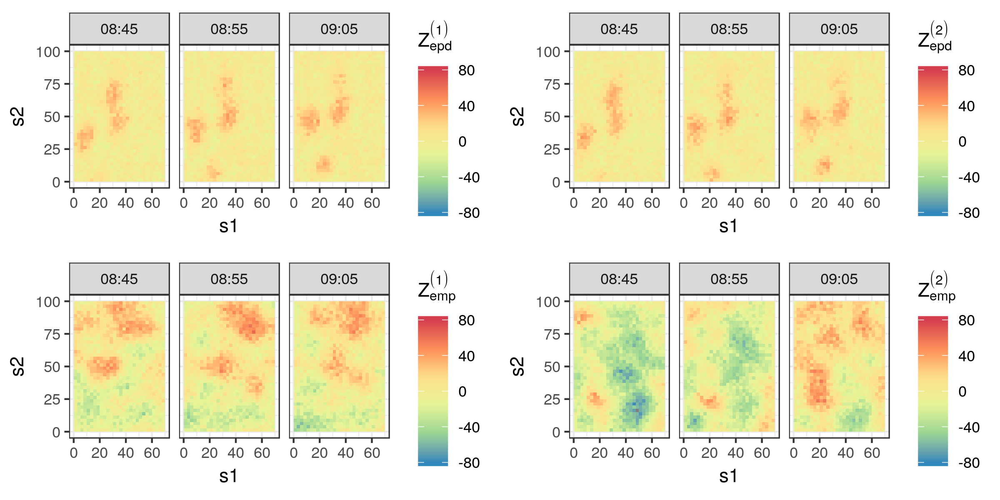
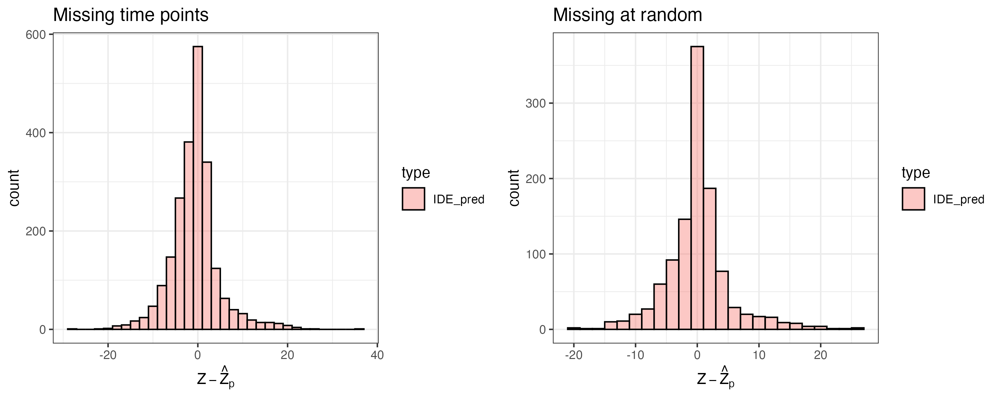
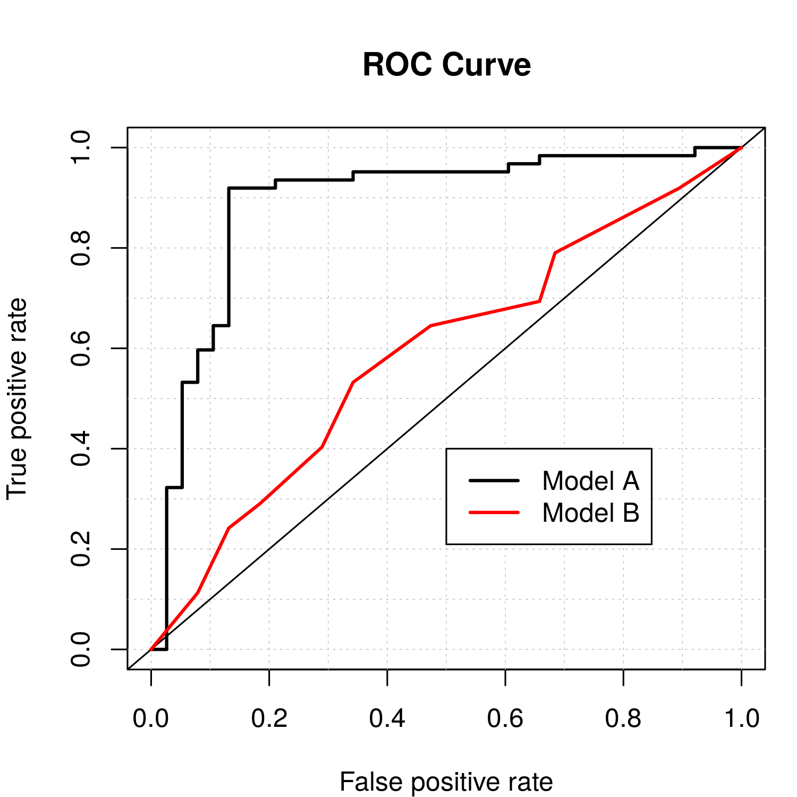
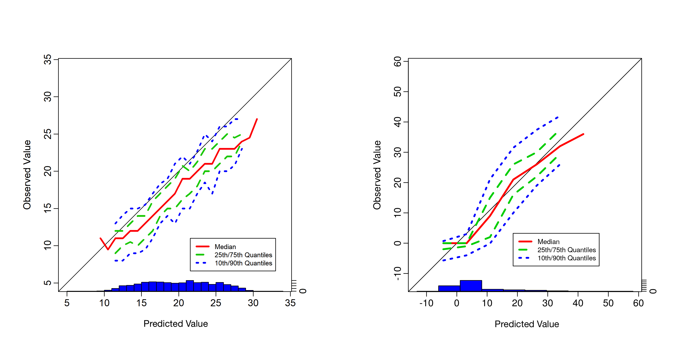
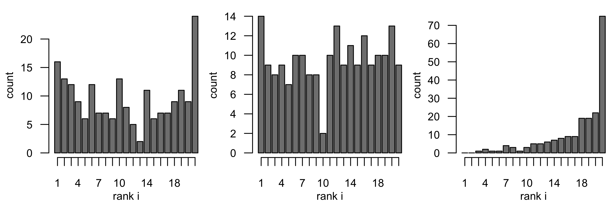
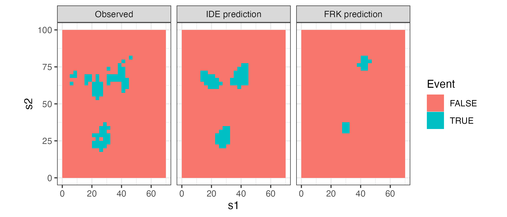

library("FRK")
library("IDE")6 Evaluating Spatio-Temporal Statistical Models
How do you know that the model you fitted actually fits well? At the core of our approach to the analysis of spatio-temporal data is a more or less detailed model containing statistical components that are designed to capture the spatio-temporal variability in the data. This chapter is about evaluating the spatio-temporal model that you fitted to describe (or to some extent explain) the variability in your data.
Model building is an iterative process. We have data and/or a scientific hypothesis and we build the model around them (e.g., using the methods of Chapters 3–5). Then we must evaluate whether that model is a reasonable representation of the real world, and we should modify it accordingly if it is not. Sometimes this process is called model criticism because we are critiquing the strengths and weaknesses of our model, analogously to a movie critic summing up a film in terms of the things that work and the things that do not. In our case, we already know our model is wrong (recall Box’s aphorism), but we do not know just how wrong it is. Just as there is no correct model, there is no correct way to do model evaluation either. Rather, think of it as an investigation, using evidence from a variety of sources, into whether the model is reasonable or not. In this sense, we are “detectives” searching for evidence that our model can represent what we hope it represents in our particular application, or we are like medical doctors running tests on their patients. With that in mind, this chapter is about providing helpful suggestions on how to evaluate models for spatio-temporal data.
We split our model-evaluation suggestions into three primary components: model checking, model validation, and model selection. From our perspective, model checking consists of evaluating our model diagnostically to check its assumptions and its sensitivity to these assumptions and/or model choices. Model validation consists of evaluating how well our model actually reproduces the real-world quantities that we care about. Model selection is a framework in which to compare several plausible models. We consider each of these in some detail in this chapter.
It is important to note that the boundaries between these three components of model evaluation are fairly “fluid,” and the reader may well notice that there is a great deal of overlap in the sense that approaches discussed in one of these sections could be applied in other sections. Such is the nature of the topic, especially in the context of spatio-temporal modeling where, we must say, it is not all that well developed.
In this chapter, we focus less on how to implement the methods in R and more on the methods themselves. The reasons for this are twofold. First, several diagnostics are straightforward to calculate once predictive distributions are available. Second, there are only a few packages that have a comprehensive suite of diagnostic tools. We also note that quite a few more primary literature citations are included in this chapter than are given in the other chapters of the book, because there has not been extensive discussion of the topic in the spatio-temporal modeling literature.
In the next section, we digress slightly to discuss how model-based predictions can be compared to observations appropriately, since the two have different statistical properties.
6.1 Comparing Model Output to Data- What Do We Compare?
Before we can talk about model evaluation, we have to decide what we will compare our model to. Hierarchical spatio-temporal modeling procedures give us the predictive distribution of the latent spatio-temporal process, \(Y\), given a (training) set of observations, \(\mathbf{Z}\), which we represent as \([Y | \mathbf{Z}]\). Because we are most often interested in this latent process, we would like to evaluate our model based on its ability to provide reasonable representations of \(Y\). But by definition, this process is hidden or latent—meaning that it is not observed directly—and thus we cannot directly evaluate our modeled process against the true process unless we do it through simulation (see Section 6.1.1 below). Alternatively, we can evaluate our model using predictive distributions of data, where we compare predictions of data (not of \(Y\)), based on our model, against the actual observed data. In particular, there are four types of predictive distributions of the data that we might use: the prior predictive distribution, the posterior predictive distribution, what we might call the empirical predictive distribution, and the empirical marginal distribution. Note that considering predictions of the data \(Z\) instead of \(Y\) involves the additional uncertainty associated with the measurement process. This is similar to standard regression modeling where the uncertainty of the prediction of an unobserved response is higher than the uncertainty of inferring the corresponding mean response. The four types of predictive distributions are defined in Section 6.1.2. Finally, given that we have simulated predictive distributions of either the data or the latent process, there is still the issue of which samples to compare. We touch on this in Section 6.1.3, with a brief discussion of various types of validation and cross-validation samples that we might use to evaluate our model.
6.1.1 Comparison to a Simulated “True” Process
Although we do not have access to the latent process, \(Y\), for evaluating our model, there is a well-established simulation-based alternative for complex processes known as an observation system simulation experiment (OSSE; see Note 6.1). The basic idea of an OSSE is that one uses a complex simulation model to generate the true underlying process, say \(Y_{\mathrm{osse}}\), and then, one generates simulated data, say \(\mathbf{Z}_{\mathrm{osse}}\), by applying an observation/sampling scheme to this true process that mimics the real-world sampling design and measurement technology. One can then use these OSSE-simulated observations in the statistical model and compare \(Y\) obtained from the predictive distribution based on the statistical model (i.e., \([Y | \mathbf{Z}_{\mathrm{osse}}]\)) against the simulated \(Y_{\mathrm{osse}}\). The metrics used for such a comparison could be any of the metrics that are described in the following sections of this chapter. Not surprisingly, OSSEs are very useful when exploring different sampling schemes and, in the geophysical sciences, they are important for studying complex earth observing systems before expensive observing-system hardware is deployed. They are also very useful for comparing competing methodologies that infer \(Y\) or scientifically meaningful functions of \(Y\).
Note 6.1: Observation System Simulation Experiment, OSSE
Observation system simulation experiments are model-based simulation experiments that are designed to consider the effect of potential observing systems on the ability to recover the true underlying process of interest, especially when real-world observations are not available. For example, these are used extensively in the geophysical sciences to evaluate new remote sensing observation systems and new data assimilation forecast systems. However, they can also be used to evaluate the effectiveness of process modeling for complex real-world processes in the presence of incomplete observations, or when observations come at different levels of spatial and temporal support (see, for example, Berliner et al. (2003)). The typical OSSE consists of the following steps. Steps 1 and 2 correspond to simulation, and steps 3–5 are concerned with the subsequent statistical analysis.
Simulate the spatio-temporal process of interest with a well-established (usually mechanistic) model. This simulation corresponds to the “true process.” Note that this is usually not a simulation from the statistical model of interest, since as much real-world complexity as possible is put into the simulation; call it \(Y_{\mathrm{osse}}\).
Apply an observation-sampling protocol to the simulated true process to obtain synthetic observations. This sampling protocol introduces realistic observation error (bias, uncertainty, and change of support) and typically considers various missing-data scenarios; call the observations \(\mathbf{Z}_{\mathrm{osse}}\).
Use \(\mathbf{Z}_{\mathrm{osse}}\) from step 2 in the spatio-temporal statistical model of interest, and obtain the predictive distribution \([Y | \mathbf{Z}_{\mathrm{osse}}]\) of the true process given the synthetic observations.
Compare features of the predictive distribution of the true process from step 3 to \(Y_{\mathrm{osse}}\) simulated in step 1.
Use the results of step 4 to either (a) refine the statistical model that was used to obtain \([Y | \mathbf{Z}_{\mathrm{osse}}]\), or (b) refine the observation process, or both.
6.1.2 Predictive Distributions of the Data
The posterior predictive distribution (ppd) is best thought of in the context of a Bayesian hierarchical model (BHM) and is given by Gelman et al. (2014)
\[ [\mathbf{Z}_{\mathrm{ppd}} | \mathbf{Z}] = \iint [\mathbf{Z}_{\mathrm{ppd}} | \mathbf{Y}, \boldsymbol{\theta}][\mathbf{Y}, \boldsymbol{\theta}| \mathbf{Z}] \textrm{d}\mathbf{Y}\textrm{d}\boldsymbol{\theta}, \tag{6.1}\]
where \(\mathbf{Z}_{\mathrm{ppd}}\) is a vector of predictions at some chosen spatio-temporal locations. We have assumed that if we are given the true process, \(\mathbf{Y}\), and parameters, \(\boldsymbol{\theta}\), then \(\mathbf{Z}_{\mathrm{ppd}}\) is independent of the observations \(\mathbf{Z}\). (Note that we are using the vector \(\mathbf{Y}\) to represent the process here to emphasize the fact that we are dealing with high-dimensional spatio-temporal processes.) In the models considered in this book, one can easily generate samples of \(\mathbf{Z}_{\mathrm{ppd}}\) through composition sampling. For example, generating posterior samples of \(\mathbf{Y}\) and \(\boldsymbol{\theta}\) in the BHM context comes naturally with Markov chain Monte Carlo (MCMC) implementations, and these samples are just “plugged into” the data model \([\mathbf{Z}_{\mathrm{ppd}} | \mathbf{Y}, \boldsymbol{\theta}]\) to generate the random draws of \(\mathbf{Z}_{\mathrm{ppd}}\).
The prior predictive distribution (pri) corresponds to the marginal distribution of the data and is given by
\[ [\mathbf{Z}_{\mathrm{pri}}] = \iint [\mathbf{Z}_{\mathrm{pri}} | \mathbf{Y}, \boldsymbol{\theta}][\mathbf{Y}| \boldsymbol{\theta}][\boldsymbol{\theta}] \textrm{d}\mathbf{Y}\textrm{d}\boldsymbol{\theta}, \tag{6.2}\]
where \(\mathbf{Z}_{\mathrm{pri}}\) is a vector of predictions at selected spatio-temporal locations. As with the ppd, realizations from this distribution can be easily generated through composition sampling, where in this case we simply generate samples of \(\boldsymbol{\theta}\) from its prior distribution, use those to generate samples of the process \(\mathbf{Y}\) from the process model, and then use these samples in the data model to generate realizations of the data, \(\mathbf{Z}_{\mathrm{pri}}\). In contrast to the ppd, no MCMC posterior samples need to be generated for this distribution.
Finally, in the empirical hierarchical model (EHM) context we define the empirical predictive distribution (epd) as
\[ [\mathbf{Z}_{\mathrm{epd}} | \mathbf{Z}] = \int [\mathbf{Z}_{\mathrm{epd}}| \mathbf{Y}, \widehat{\boldsymbol{\theta}}][\mathbf{Y}| \mathbf{Z}, \widehat{\boldsymbol{\theta}}] \textrm{d}\mathbf{Y}, \tag{6.3}\]
and the empirical marginal distribution (emp) as
\[ [\mathbf{Z}_{\mathrm{emp}}] = \int [\mathbf{Z}_{\mathrm{emp}}| \mathbf{Y}, \widehat{\boldsymbol{\theta}}][\mathbf{Y}| \widehat{\boldsymbol{\theta}}] \textrm{d}\mathbf{Y}, \tag{6.4}\]
where \(\mathbf{Z}_{\mathrm{epd}}\) and \(\mathbf{Z}_{\mathrm{emp}}\) are vectors of predictions at selected spatio-temporal locations. The difference between Equation 6.3 and Equation 6.1, and between Equation 6.4 and Equation 6.2, is that instead of integrating over \(\boldsymbol{\theta}\) (which is assumed to be random in the BHM framework), we substitute an estimate \(\widehat{\boldsymbol{\theta}}\) (e.g., a ML or REML estimate). Again, it is easy to sample from Equation 6.3 and Equation 6.4 by composition sampling since, once \(\widehat{\boldsymbol{\theta}}\) is obtained, we can generate samples of \(\mathbf{Y}\) easily from \([\mathbf{Y}| \mathbf{Z}, \widehat{\boldsymbol{\theta}}]\) and from \([\mathbf{Y}| \widehat{\boldsymbol{\theta}}]\) with an MCMC. In the spatio-temporal Gaussian case, these are known multivariate normal distributions. Then \(\widehat{\boldsymbol{\theta}}\) and the samples of \(\mathbf{Y}\) are “plugged into” the data model to obtain samples of \(\mathbf{Z}_{\mathrm{epd}}\) and \(\mathbf{Z}_{\mathrm{emp}}\), respectively.
For illustration, consider the IDE model fitted to the Sydney radar data set in Lab 5.2. The top panels of Figure 6.1 show two samples from the epd empirical predictive distribution for the time points 08:45, 08:55, and 09:05, while the bottom panels show two samples from the emp empirical marginal distribution at the same time points. We shall discuss model validation using the predictive distributions of the data in Section 6.3.1, but simply “eyeballing” the plots may also reveal interesting features of the fitted model. First, the two samples from the epd are qualitatively quite similar, and this is usually an indication that the data have considerable influence on our predictive distributions. These epd samples are also very different from the emp samples, adding weight to the argument that the predictions in the top panels are predominantly data driven. Second, the samples from emp are very useful in revealing potential flaws and strengths of the model. For example, in this case the samples reveal that negative values for dBZ (green and blue) are just as likely as positive values for dBZ (orange and red), while we know that this is not a true reflection of the underlying science. On the other hand, the spatial length scales, and the persistence of the spatial features in time are similar to what one would expect just by looking at the data (see Section 2.1). These qualitative impressions, which will be made rigorous in the following sections, play a big role in selecting and tuning spatio-temporal models to improve their predictive ability.

Tip
Several R packages contain built-in functionality for sampling from one or more of the predictive distributions listed in Equation 6.1–Equation 6.4. For example, the function krige in the package gstat can be used to generate simulations from both epd and emp, while the function simIDE in the package IDE can be used to generate simulations from emp after fitting an IDE model.
6.1.3 Validation and Cross-Validation
Most often we will have to compare real-world validation observations, say \(\mathbf{Z}_v\), to observations predicted from our model, say \(\mathbf{Z}_p\), from one (or all) of the four possibilities (ppd, pri, epd, emp) given in the previous section. The question here is, to which observations do we compare \(\mathbf{Z}_p\)? The generalization ability of a model is a property that says how well it can predict a test data set (also referred to as a validation data set) that is different from the data used to train the model. (Note that the words “test” and “validation” are often used interchangeably in this context; we prefer to use “validation.”) So, assume that we have used a sample of data, \(\mathbf{Z}\), to train our model. Before we describe the different possibilities for selecting validation data \(\mathbf{Z}_v\), note that spatio-temporal processes have certain properties that should be considered when comparing model predictions to real-world observations. In particular, as with time series, spatio-temporal processes have a unidirectional time dependence and, like spatial processes, they have various degrees of spatial dependence. These dependencies should be considered whenever possible when evaluating a spatio-temporal model.
In general, the choice for validation observations \(\mathbf{Z}_v\) can then be one of the following.
- Training-data validation. It can be informative to use predicted observations of the training data set (\(\mathbf{Z}_v = \mathbf{Z}\)) to evaluate our model, particularly when evaluating the model’s ability to fit the data and for checking model assumptions via diagnostics. However, in the context of prediction, it is not typically recommended to use the training data for validating the model’s predictive ability, as the model’s training error is typically optimistic in the sense that it underestimates the predictive error that would be observed in an independent sample. Perhaps not surprisingly, the amount of this optimism is related to how strongly a predicted value from the training data set affects its own prediction (see Hastie et al., 2009, Chapter 7, for a comprehensive overview).
- Within-sample validation. It is often useful to consider validation samples in which one leaves out a collection of spatial observations at time(s) within the spatio-temporal window defined by the extent of the training data set. Although one can leave out data at random in such settings, a more appropriate evaluation of spatio-temporal models results from leaving out “chunks” of data. This is because the spatio-temporal dependence structure must be very well characterized to adequately fill in large gaps for spatio-temporal processes (particularly dynamic processes). We saw such an example in Chapter 4, where we left out one period of the NOAA maximum temperature data but had observations both before and after that period.
- Forecast validation. One of the most-used validation methods for time-dependent data is to leave out validation data beyond the last time period of the training period, and then to use the model to forecast at these future time periods. To predict the evolution of spatial features through time, the spatio-temporal model must adequately account for (typically non-separable) spatio-temporal dependence. Hence, forecast validation provides a gold standard for such evaluations.
- Hindcast validation. Hindcasting (sometimes known as backtesting) refers to using the model to predict validation data at time periods before the first time period in the training sample. Of course, this presumes that we have access to data that pre-dates our training sample! This type of out-of-sample validation has similar advantages to forecast validations.
- Cross-validation. There are many modeling situations where one needs all of the available observations to train the model, especially at the beginning and end of the data record. Or perhaps one is not certain that the periods in the forecast or hindcast validation sample are representative of the entire period (e.g., when the process is non-stationary in time). This is a situation where cross-validation can be quite helpful. Recall that we described cross-validation in Note 3.1. In the context of spatio-temporal models with complex dependence, one has to be careful that the cross-validation scheme chosen respects the dependence structure. In addition, many implementations of spatio-temporal models are computationally demanding, which can make traditional cross-validation very expensive.
In Lab 6.1 we provide an example of within-sample validation, where a 20-minute interval from the Sydney radar data set is treated as validation data, and a model using spatio-temporal basis functions is compared to an IDE model through their prediction performances in this 20-minute interval.
Spatio-Temporal Support of Validation Data and Model Predictions
So far we have assumed that the validation data set, \(\mathbf{Z}_v\), and the model-predicted observations, \(\mathbf{Z}_{\mathrm{ppd}}\) (say), are available at the same spatial and temporal support. In many applications, this is not the case. For example, our model may produce spatial fields (defined over a grid) at daily time increments, but observations may be station data observed every hour. In some sense, if our data model is realistic, then we may have already accounted for these types of change of support. In other cases, one may perform ad hoc interpolation or aggregation to bring the validation and model support into agreement. This is a standard approach in many meteorological forecasting studies (see, for example, Brown et al., 2012). The hierarchical modeling paradigm discussed here does provide the flexibility for incorporating formal change of support, but this is beyond the scope of this book (for more details, see Cressie & Wikle, 2011, Chapter 7, and the references therein). In the remainder of this chapter, we shall assume that the validation sample and the associated model predictions are at the same spatio-temporal support.
6.2 Model Checking
Now that we know what to compare to what, consider the first of our three types of model evaluation: model checking. From our perspective, this corresponds to checking model assumptions and the sensitivity of the model output to these assumptions and/or model choices. That is, we evaluate our spatio-temporal model using statistical diagnostics. We begin with a brief description of possible extensions of standard regression diagnostics, followed by some simple graphical diagnostics, and then we give a brief description of robustness checks.
6.2.1 Extensions of Regression Diagnostics
As in any statistical-modeling problem, one should evaluate spatio-temporal modeling assumptions by employing various diagnostic tools. In regression models and GLMs, one often begins such an analysis by evaluating residuals, usually obtained by subtracting the estimated or predicted response from the data. Looking at residuals may bring our attention to certain aspects of the data that we have missed in our model.
As discussed in Chapter 3, for additive Gaussian measurement error, we can certainly do this in the spatio-temporal case by evaluating the spatio-temporal residuals,
\[ \widehat{e}(\mathbf{s}_i;t_j) \equiv Z(\mathbf{s}_i;t_j) - \widehat{Z}_p(\mathbf{s}_i;t_j), \tag{6.5}\]
for \(i=1,\ldots,m\) and \(j=1,\ldots,T\), where \(\widehat{Z}_p(\mathbf{s}_i;t_j)\) is the mean of the ppd or epd as discussed in Section 6.1.2. Note that for notational simplicity we assume in this chapter that we have the same number of observations (\(m\)) at the same spatial locations for each time point. This need not be the case, and the equations can easily be modified to represent the more general setting of a different number of observations at different locations for each time point.
In Figure 6.2 we show the histograms of the spatio-temporal residuals obtained for the two models evaluated in Lab 6.1 using validation data for an entire 20-minute block (left panel) and at random locations (right panel). It is clear from these histograms that for both types of missingness, the variance of the residuals based on the IDE model is slightly lower than that based on the model used by the FRK model.

In addition to the classical residuals given in Equation 6.5, we can consider deviance or Pearson chi-squared residuals for non-Gaussian data models (as discussed in Chapter 3). Given spatio-temporal residuals, it is usually helpful to visualize them using the various tools discussed in Chapter 2 (see Lab 6.1). In addition, as discussed in Chapter 3, one can consider quantitative summaries to evaluate residual temporal, spatial, or spatio-temporal dependence, such as with the PACF, Moran’s \(I\), and S-T covariogram summaries. In the case of the latter, one may also consider more localized summaries, known as local indicators of spatial association (LISAs) or their spatio-temporal equivalents (ST-LISAs) where the component pieces of a summary statistic are indexed by their location and evaluated individually (see Cressie & Wikle, 2011, Section 5.1).
Diagnostics have also been developed specifically for models with spatial dependence that are easily extended to spatio-temporal models. For example, building on the ground-breaking work of Cook (1977), Haslett (1999) considered a simple approach for “deletion diagnostics” in models with correlated errors. For example, if one has a model such as \(\mathbf{Z}\sim Gau(\mathbf{X}\boldsymbol{\beta}, \mathbf{C}_z)\), then interest is in the effect of leaving out elements of \(\mathbf{Z}\) on the estimation of \(\boldsymbol{\beta}\). Analogously to \(K\)-fold cross-validation discussed in Chapter 3, assume we split our observations into two groups, \(\mathbf{Z}= \{\mathbf{Z}_b, \mathbf{Z}_v\}\), and then we predict \(\mathbf{Z}_v\) based only on training data \(\mathbf{Z}_b\), which we denote by \(\widehat{\mathbf{Z}}^{(-v)}\). Then, as with standard (independent and identically distributed (\(iid\)) errors) regression, one can form diagnostics in the correlated-error context, analogous to the well-known DFBETAS and Cook’s distance diagnostics. These compare the regression coefficients estimated under the hold-out scenario (say, \(\widehat{\boldsymbol{\beta}}^{(-v)}\)) to the parameters estimated using all of the data (\(\widehat{\boldsymbol{\beta}}\)), and Haslett (1999) provides some efficient approaches to obtain \(\widehat{\boldsymbol{\beta}}^{(-v)}\). It is important to note that these diagnostics are based on the cross-validated residuals,
\[ \widehat{\mathbf{e}}_v \equiv \mathbf{Z}_v - \widehat{\mathbf{Z}}^{(-v)}, \tag{6.6}\]
rather than the within-sample residuals given by Equation 6.5.
6.2.2 Graphical Diagnostics
Several diagnostic plots have proven useful for evaluating predictive models, and these largely depend on the observation type. Recall, from our discussions in Chapters 3–5, that it is fairly straightforward to model spatio-temporal binary or count data using the techniques we described within a GLM framework. Our discussion below on graphical diagnostics covers the most common types of data encountered in practice.
When considering binary outcomes, which are common when observing processes such as occupancy (presence–absence) in ecology, and precipitation (rain or no rain) in meteorology, there is a long tradition in statistics and engineering of considering a receiver operating characteristic (ROC) curve. For binary data, a statistical model (say, a Bernoulli data model with a logit link function) provides an estimate of the probability that the outcome is a 1 (versus a 0). Then, for predictions, a threshold probability is typically set, and the predicted outcome is put equal to 1 if the estimated probability is larger than the threshold, and put equal to 0 if not. Clearly, the performance of the predictions will depend on the threshold. The ROC plot presents the true positive rate (i.e., sensitivity, namely the percentage of 1s that were correctly predicted) on the \(y\)-axis versus the false positive rate (i.e., 1 minus the specificity, namely the percentage of 0s that were incorrectly predicted to be 1s) on the \(x\)-axis as the value of the threshold probability changes (from 0 to 1). Since we prefer a model that gives a high true positive rate and low false positive rate, we like to see ROC curves that are well above the 45-degree line. One often summarizes an ROC curve by the area under the ROC curve (sometimes abbreviated as “area under the curve” (AUC)), with the best possible area being 1.0 and with a value of 0.5 corresponding to a “no information” (i.e., a coin-flipping) model. Figure 6.3 shows two ROC curves for a data set based on 100 simulated Bernoulli responses from a logistic regression model with simulated covariates. The black ROC curve corresponds to a simple model (a logistic regression model with fewer covariates than used for the simulation) and the red ROC curve corresponds to flipping a coin (random guessing). The AUCs for the two models are 0.89 and 0.59, respectively. Although useful for evaluating prediction, the ROC curve is limited in that it is generally insensitive to prediction biases (Wilks, 2011, Chapter 8).
Tip
ROC curves can be easily generated in R using the functions prediction and performance from the package ROCR or the function roc.plot from the package verification.

roc.plot function in the verification R package.
There are several diagnostic plots that are used for meteorological forecast validation but are less commonly used in statistics (see Wilks, 2011, Chapter 8). Some of these plots attempt to show elements of the joint distribution of the prediction and the corresponding validation observation. As an example, conditional quantile plots are used for continuous responses (e.g., temperature). In particular, these plots consider predicted values on the \(x\)-axis and the associated quantiles from the empirical predictive distribution of the observations associated with the predictions on the \(y\)-axis. This allows one to observe potential problems with the predictive model (e.g., biases). This is better seen in an example. The left panel of Figure 6.4 shows a conditional quantile plot for simulated data in a situation where the predictive model is, on average, biased high relative to the observations by about 3 units. This can easily be seen in this plot since the conditional distribution of the observations given the predictions is shifted below the 45-degree line. In the right panel of Figure 6.4 we show the conditional quantile plot for the IDE model predictions in Lab 6.1 for the missing 20-minute interval. The predictions appear to be unbiased except when the observed reflectivity is close to zero.
Similar decomposition-based plots can be used for probabilistic predictions of discrete events (e.g., the reliability diagram and the discrimination diagram; see Wilks (2011), Chapter 8, and the R package verification) and have an advantage over the ROC plot since they display the joint distribution of prediction and corresponding observations and thus can reveal forecast biases.
Tip
Conditional quantile plots can be generated in R using the function conditional.quantile from the package verification.

conditional.quantile function in the verification R package. Note that the \(x\)-axis gives the histogram associated with the verification observations \(\{Z_v^i,\ i=1,\ldots,n_f\}\) and the colored lines in the plot correspond to smooth quantiles from the conditional distribution of predicted values for each of these verification observations .
When one has samples from a predictive distribution (as described in Section 6.1.2) or an ensemble forecasting model (such as described in Appendix F), there are additional graphical assessments that can be informative to evaluate a model’s predictive performance. Consider the so-called verification ranked histogram. Suppose we have \(n_f\) different predictive situations, each with an observation (an element of \(\mathbf{Z}_v\), say \(Z^i_{v}\), for \(i=1,\ldots,n_f\)) to be used in verification, and for each of these predictions we have \(n_s\) samples from the predictive distribution, say \([\mathbf{Z}_{\mathrm{epd}}^{i} | \mathbf{Z}_b]\), \(i=1,\ldots,n_f\), where \(\mathbf{Z}_{\mathrm{epd}}\) is a sample of size \(n_s\) (note that we could just as easily consider the ppd here). For each of the \(n_f\) predictive situations we calculate the rank of the observation relative to the ordered \(n_s\) samples; for example, if the observation is less than the smallest sample member, then it gets a rank of 1, if it is larger than the largest sample member, it gets a rank of \(n_s +1\), and so on. If the observation and the samples are from the same distribution, then the rank of the observation should be uniformly distributed (since it is equally likely to fall anywhere in the sample). Thus, we plot the \(n_f\) ranks in a histogram and look for deviations from uniformity. As shown in Wilks (2011, Chapter 8), deviations from uniformity can suggest problems such as bias or over-/under-dispersion.
As an example, Figure 6.5 shows verification histograms for three cases of (simulated) observations using the Rankhist and PlotRankhist functions in the package SpecsVerification. Each example is based on \(n_f = 2000\) verification observations (i.e., \(\{Z^i_v,\ i=1,\ldots,2000\}\)) and \(n_s = 20\) samples from the associated predictive distribution \([\mathbf{Z}^i_{\mathrm{epd}} | \mathbf{Z}_b]\) for each of these verification observations. The left panel shows a case where the predictive distribution is under-dispersed relative to the observations and the right panel shows a case where the predictions are biased low relative to the observations. The center panel shows a case where the observations and predictions are from the same distribution, which implies rank uniformity. Note that there is a reasonable amount of sampling variability in these rank histograms. It is fairly straightforward to use a chi-squared test to test a null hypothesis that the histogram corresponds to a uniform distribution (see Weigel, 2012). The SpecsVerification package will implement this test in the context of the rank histogram. For the simulated example, the \(p\)-values for the left-panel and right-panel cases in Figure 6.5 are very close to 0, resulting in rejection of the null hypothesis of rank uniformity, whereas the case represented by the center panel has a \(p\)-value close to 0.8, so that rank uniformity is not rejected.

Rankhist function in the SpecsVerification R package.
The graphical methods described here are not really designed for spatio-temporal data. One might be able to consider predictions at different time periods and spatial locations as different cases for comparison, but spatio-temporal dependence is not explicitly accounted for in such comparisons. This could be problematic as predictions in close proximity in space and time are spatio-temporally correlated, and it is therefore relatively easy to select a subset of points that indicate that predictions are biased, when in reality they are not. Any apparent bias could be a fortuitous outcome of the space-time locations chosen for validation. One way to get around this issue is to consider predictions at different (well-separated) time points at the same location in space (so as to break the spatio-temporal dependence). Then one could look at several such plots for different locations in space to gain an appreciation for the geographical influence on model performance. In the context of the rank histogram, there have been some attempts to consider multivariate predictands (e.g., multiple locations in space and/or multivariate responses), but the challenge then is to develop ranks in this multivariate setting. Perhaps the most useful such approach is based on the so-called minimum spanning tree histograms; see the summary in Wilks (2011). The development of graphical diagnostics for spatio-temporal data is very much a research topic at the time of writing.
6.2.3 Sensitivity Analysis
An important part of model evaluation is the notion of robustness. Informally, we might say that model robustness is an evaluation of whether certain model assumptions have too much influence on model predictions. (This is a bit different from the more classical topic of robust estimation of model parameters.) Here we focus on the relatively simple notion of sensitivity analysis in the context of spatio-temporal modeling. In a sensitivity analysis, we evaluate how much our predictions change as we vary some aspect of our model (e.g., the number of basis functions or the degree of spatial dependence in an error distribution). We briefly describe some heuristic approaches to sensitivity analysis in this section, but we note that the validation statistics described below in Section 6.3 could also be used as metrics to evaluate model sensitivity.
In the case where we fix certain parameters at their estimates (e.g., covariance parameters in S-T kriging), we should evaluate the sensitivity of the model predictions to the estimated values. Note that a common criticism of such empirical plug-in approaches (used in an EHM implementation) is that they do not capture sufficient variability (e.g., relative to a BHM implementation) because they do not take the uncertainty of the parameter estimates directly into account. Nonparametric bootstrapping could be used, but it can be challenging to take bootstrap samples that adequately represent the dependence structure in the spatio-temporal data. So, to evaluate the sensitivity of model predictions to fixing parameters at their data-based estimates, one might consider how sensitive the prediction errors are to the fixed parameters, \(\boldsymbol{\theta}\), being estimated by two different methods, say using MLE and REML. Then, as in the spatial setting of Kang et al. (2009), we can consider heuristic measures such as the ratio of predictive standard deviations. In the spatio-temporal setting, this can be written as
\[ \left[\frac{\textrm{var}(Y(\mathbf{s};t) | \mathbf{Z}, \widehat{\boldsymbol{\theta}}_a )}{\textrm{var}(Y(\mathbf{s};t) | \mathbf{Z}, \widehat{\boldsymbol{\theta}}_b) } \right]^{1/2}, \tag{6.7}\]
where \(\mathbf{Z}\) represents the data, \(\widehat{\boldsymbol{\theta}}_a\) and \(\widehat{\boldsymbol{\theta}}_b\) are two parameter estimates (e.g., ML and REML estimates), and \(\textrm{var}(Y(\mathbf{s};t) | \mathbf{Z}, \boldsymbol{\theta})\) represents the process’ predictive variance at \((\mathbf{s};t)\) for fixed \(\boldsymbol{\theta}\). Clearly, if the ratio in Equation 6.7 is close to 1, then it suggests that there is little sensitivity in the predictive standard deviations relative to differences in the parameter estimates \(\widehat{\boldsymbol{\theta}}_a\) and \(\widehat{\boldsymbol{\theta}}_b\).
Similarly, we might compare the standardized differences in predictive means,
\[ \frac{E(Y(\mathbf{s};t) | \mathbf{Z}, \widehat{\boldsymbol{\theta}}_a ) - E(Y(\mathbf{s};t) | \mathbf{Z}, \widehat{\boldsymbol{\theta}}_b) }{\{\textrm{var}(Y(\mathbf{s};t) | \mathbf{Z}, \widehat{\boldsymbol{\theta}}_b)\}^{1/2} }, \tag{6.8}\]
where \(E(Y(\mathbf{s};t) | \mathbf{Z}, \boldsymbol{\theta})\) is the predictive mean for fixed \(\boldsymbol{\theta}\). In this case, if Equation 6.8 is close to 0, it suggests that the predictive means are not overly sensitive to these parameter-estimate differences. We also note that Equation 6.7 and Equation 6.8 are given for an individual location \((\mathbf{s};t)\) in space and time, but one could do additional averaging over regions in space and/or time periods and/or produce plots in space and time.
For illustration, consider the maximum temperature in the NOAA data set fitted using a Gaussian process, as in Lab 4.1. One can fit the theoretical semivariogram to the data using either least squares or weighted least squares. What, then, is the sensitivity of our predictions to the choice of fitting method? With gstat, one can call fit.StVariogram with fit.method = 6 (default) for least squares, or fit.method = 2 for weights based on the number of data pairs in the spatio-temporal bins used to construct the empirical semivariogram (see Cressie, 1993, Chapter 2). For a grid cell at (100\(^\circ\)W, 34.9\(^\circ\)N) on 14 July 1993, the ratio of the predictive standard deviations is 1.03, while the standardized difference in the predictive means is 0.00529. When can a spatio-temporal model be considered robust in terms of its predictions? The answer to this question largely depends on the reason why the model was fitted in the first place and is application-dependent, but, in the context of these maximum-temperature data, it is reasonable to say that the estimation method chosen does not seem to impact the predictions at the chosen space-time location in a substantial way.
In Bayesian implementations of spatio-temporal models, we may still be interested in the sensitivity of our posterior distributions to certain parameters or model assumptions. In this case, we could make different model assumptions and compare samples of \(Y\) from the posterior distribution or samples of \(\mathbf{Z}_{\mathrm{ppd}}\) from the ppd. Comparisons could be made using measures analogous to Equation 6.7 and Equation 6.8 or more general measures of distributional comparisons discussed below in Section 6.3. In the context of MCMC algorithms that generate posterior samples, this can be costly in complex models as it requires that one fit the full model with possibly many different data-model, process-model, and parameter-model distributions.
6.3 Model Validation
Recall that model validation is simply an attempt to determine how closely our model represents the real-world process of interest, as manifested by the data we observe. Specifically, after checking our model assumptions through diagnostics and sensitivity analysis, we can validate it against the real world. Although by no means exhaustive, this section presents some of the more common model-validation approaches that are used in practice.
6.3.1 Predictive Model Validation
One of the simplest ideas in model validation is to assess whether the data that are generated from our fitted model “look” like data that we have observed. That is, we can consider samples of \(\mathbf{Z}_{\mathrm{ppd}}\) or \(\mathbf{Z}_{\mathrm{epd}}\) from the ppd or the epd, respectively, as described in Section 6.1.2. Given that we have samples of \(\mathbf{Z}_{\mathrm{ppd}}\) or of \(\mathbf{Z}_{\mathrm{epd}}\), what do we do with them?
As in Section 6.2, we refer to these samples simply as \(\mathbf{Z}_p\). We can look at any diagnostics we like to help us discern how similar these draws from the ppd or the epd are to the observed data – remember, we are trying to answer the question as to whether the observed data look reasonable based on the predictive distribution obtained from our model. These diagnostics are sometimes called predictive diagnostics. Here, discussion focuses on posterior predictive diagnostics based on the ppd, but there is an obvious analog of empirical predictive diagnostics where one considers the epd rather than the ppd.
As outlined in Gelman et al. (2014), a formalization of this notion is to consider a discrepancy measure, \(T(\mathbf{Z}; \mathbf{Y}, \boldsymbol{\theta})\). The discrepancy \(T(\cdot)\) is specified by the modeler and may be a measure of overall fit (e.g., a scoring rule such as described in Section 6.3.4) or any other feature of the data, the process, and the parameters. So, one calculates \(T(\cdot)\) for each of \(L\) replicates of the simulated data, and also for the observed data.
We now change notation slightly to show in detail how posterior predictive diagnostics can be constructed. Specifically, for the simulated observations, we calculate \(\{T(\mathbf{Z}^{(\ell)}_{p}; \mathbf{Y}^{(\ell)}, \boldsymbol{\theta}^{(\ell)}):\) \(\ell = 1,\ldots,L\}\) for the \(L\) replicates \(\{\mathbf{Z}^{(\ell)}_{p}\}\) sampled from \([\mathbf{Z}_p | \mathbf{Z}]\) based on the samples \(\{\mathbf{Y}^{(\ell)}, \boldsymbol{\theta}^{(\ell)}\}\) from \([\mathbf{Y}, \boldsymbol{\theta}| \mathbf{Z}]\). Simple scatter plots of the discrepancy measures from the replicated data samples, \(T(\mathbf{Z}^{(\ell)}_{p}; \mathbf{Y}^{(\ell)}, \boldsymbol{\theta}^{(\ell)})\), versus the discrepancy measure from the observed data, \(T(\mathbf{Z}_{p}; \mathbf{Y}^{(\ell)}, \boldsymbol{\theta}^{(\ell)})\), can be informative. For example, if the points are scattered far from a 45-degree line, then we can assume that for this choice of \(T\) the model is not generating data that behave like the observations (e.g., see Gelman et al., 2014, Section 6.3).
We can make this procedure less subjective by considering posterior predictive \(p\)-values, which are given by
\[ p_B = \Pr(T(\mathbf{Z}_p; \mathbf{Y}, \boldsymbol{\theta}) \ge T(\mathbf{Z}; \mathbf{Y}, \boldsymbol{\theta}) | \mathbf{Z}), \]
where the probability is calculated based on the samples \(\{T(\mathbf{Z}^{(\ell)}_{p}; \mathbf{Y}^{(\ell)}, \boldsymbol{\theta}^{(\ell)}): \ell = 1,\ldots,L\}\); note, the “B” subscript in \(p_B\) refers to “Bayes.” In general, values of \(p_B\) close to 0 or 1 cast doubt on whether the model produces data similar to the observed \(\mathbf{Z}\) (relative to the chosen discrepancy measure), in which case one may need to reconsider the model formulation. It is important to reiterate that this “\(p\)-value” is best used as a diagnostic procedure, not for formal statistical testing. As mentioned, one can also construct analogous predictive diagnostics based on the prior predictive distribution (i.e., prior predictive \(p\)-values), the empirical predictive distribution (i.e., empirical predictive \(p\)-values), and the empirical marginal distribution (i.e., empirical marginal \(p\)-values). In the epd context, this has been formulated as a Monte Carlo test for validation (e.g., Kornak et al., 2006).
For illustration, consider the example of Section 6.1.2 (Sydney radar data set and the IDE model). We chose discrepancy measures to be the minimum (\(T_{\min}\)) and maximum (\(T_{\max}\)) radar reflectivity across the grid boxes with centroid at \(s_1 = 26.25\) (i.e., a vertical transect) over the three time points shown in Figure 6.1. In Figure 6.6 we plot the empirical marginal distributions and empirical predictive distributions for these two discrepancy measures as obtained from \(L=500\) replications, together with the observed minimum and maximum. In both of these cases, and for both distributions, the \(p\)-values are greater than 0.05, suggesting a reasonable fit. Specifically, the empirical marginal \(p\)-value and empirical predictive \(p\)-value for \(T_{\min}\) were 0.09 and 0.442, respectively, while the \(p\)-values for \(T_{\max}\) were 0.364 and 0.33, respectively (note that the \(p\)-values we report are \(\min(p_B, 1-p_B)\)).

6.3.2 Spatio-Temporal Validation Statistics
Perhaps the most common scalar validation statistic for continuous-valued spatio-temporal processes is the mean squared prediction error (MSPE), which for spatio-temporal validation sample \(\{Z_v(\mathbf{s}_i;t_j): j=1,\ldots,T;\ i=1,\ldots,m\}\), and corresponding predictions \(\{\widehat{Z}_v(\mathbf{s}_i;t_j) \}\), is given by
\[ MSPE = \frac{1}{T m} \sum_{j=1}^T \sum_{i=1}^m \{Z_v(\mathbf{s}_i;t_j) - \widehat{Z}_v(\mathbf{s}_i;t_j)\}^2, \]
where again, for convenience, we have assumed the same number of spatial observations for each time period (which simplifies the notation, but different numbers of spatial locations for each time are easily accommodated). In this section we assume that \(\{\widehat{Z}_v(\mathbf{s}_i;t_j)\}\) are predictions based on all of the data, \(\mathbf{Z}\) (we relax that assumption in Section 6.3.3). Sometimes one might be interested in looking at MSPE for a particular time point, averaged across space, or for a particular spatial location (or region), averaged across time. The MSPE summary is so popular because it is an empirical measure of expected squared error loss which, when minimized, results in the S-T kriging predictor. In addition, the MSPE can be decomposed into a term corresponding to the bias (squared) of the predictor plus a term corresponding to the variance of the predictor. This is important because a large part of model-building consists of exploring the trade-offs between bias and variance. It is equally common to consider the root mean squared prediction error (RMSPE), which is simply the square root of the MSPE. This is sometimes favored because the units of the RMSPE are the same as those of the observations.
In cases where one wishes to protect against the influence of outliers, it is common to consider the mean absolute prediction error (MAPE), which can be computed from
\[ MAPE = \frac{1}{T m} \sum_{j=1}^T \sum_{i=1}^m |Z_v(\mathbf{s}_i;t_j) - \widehat{Z}_v(\mathbf{s}_i;t_j)|. \]
Although a useful summary for validation, the MAPE does not have the natural decomposition into bias and variance components that the MSPE does. But we note that for errors that do not exhibit bias, the MAPE can be interpreted as a robust version of the RMSPE.
Another common scalar validation statistic for spatio-temporal data is the so-called anomaly correlation coefficient (ACC). This is the usual Pearson product moment formula for correlation (i.e., the empirical correlation) applied to anomalies of the observations and predictions. Anomalies (a term that comes from the atmospheric sciences) are just deviations with respect to a long-term average of the observations (e.g., climatology in atmospheric applications). That is, let \(Z'_v(\mathbf{s}_i;t_j) \equiv Z_v(\mathbf{s}_i;t_j) - Z_a(\mathbf{s}_i)\) and \(\widehat{Z}'_v(\mathbf{s}_i;t_j) \equiv \widehat{Z}_v(\mathbf{s}_i;t_j) - Z_a(\mathbf{s}_i)\) be the anomalies of the validation observations and corresponding predictions relative to the time-averaged observation, \(Z_a(\mathbf{s}_i)\), at location \(\mathbf{s}_i\), for \(i=1,\ldots,m\). Then the ACC is just the empirical correlation between \(\{Z'_v(\mathbf{s}_i;t_j)\}\) and \(\{\widehat{Z}_v'(\mathbf{s}_i;t_j)\}\). This can be calculated across all time periods and spatial locations, or across time for each spatial location separately (and plotted on a map), or across space for each time period separately (and plotted as a time series). As with any correlation measure, the ACC does not account for bias in predictions relative to the observations, but it is still useful for spatial-field validation as it does detect phase differences (shifts) between fields. In contrast, the MSPE captures bias and variance and is not invariant to linear association.
The statistics literature has considered several simple heuristic validation metrics for spatio-temporal data. For example, in the context of within-sample validation, for spatio-temporal validation data \(\{Z_v(\mathbf{s}_i;t_j)\}\) and corresponding mean predictions \(\{\widehat{Z}_v(\mathbf{s}_i;t_j)\}\), one can consider the following spatial validation statistics based on residuals and predictive variances as outlined in Carroll & Cressie (1996):
\[ V_1(\mathbf{s}_i) = \frac{(1/T) \sum_{j=1}^T \{Z_v(\mathbf{s}_i;t_j) - \widehat{Z}_v(\mathbf{s}_i;t_j)\}}{(1/T) \{\sum_{j=1}^T \textrm{var}(Z_v(\mathbf{s}_i;t_j) | \mathbf{Z})\}^{1/2}}, \tag{6.9}\]
\[ V_2(\mathbf{s}_i) = \left[\frac{(1/T) \sum_{j=1}^T \{Z_v(\mathbf{s}_i;t_j) - \widehat{Z}_v(\mathbf{s}_i;t_j)\}^2}{(1/T) \sum_{j=1}^T \textrm{var}(Z_v(\mathbf{s}_i;t_j) | \mathbf{Z})}\right]^{1/2}, \tag{6.10}\]
\[ V_3(\mathbf{s}_i) = \left[ \frac{1}{T} \sum_{j=1}^T \{Z_v(\mathbf{s}_i;t_j) - \widehat{Z}_v(\mathbf{s}_i;t_j)\}^2 \right]^{1/2}, \tag{6.11}\]
where \(\textrm{var}(Z_v(\mathbf{s}_i;t_j) | \mathbf{Z})\) is the predictive variance. The summary \(V_1(\mathbf{s}_i)\) provides a sense of the bias of the predictors in space (i.e., we expect this value to be close to 0 if there is no predictive bias). Similarly, \(V_2(\mathbf{s}_i)\) provides a measure of the accuracy of the MSPEs and should be close to 1 if the model estimate of prediction error is reasonable. Finally, \(V_3(\mathbf{s}_i)\) is a measure of goodness of prediction, with smaller values being better – this is more useful when our model is compared to some baseline model or when there is a comparison of several models. It is often helpful to plot these summary measures as a function of space to identify if certain regions in space show better predictive performance. Note that equivalent temporal validation statistics, in obvious notation \(V_1(t), V_2(t), V_3(t)\), can be obtained by replacing the averages over the time points with averages over the spatial locations. These can then be evaluated analogously to the spatial versions, and plotted as time series to see if certain time periods show better performance than others.
Tip
Several R packages contain functionality for computing these simple validation statistics. However, these can be implemented directly by the user with a few lines of code using functions that take three arguments (the data, the predictions, and the prediction standard errors) as input. For example,
V1 <- function(z, p, pse) sum(z - p) / sqrt(sum(pse^2))implements Equation 6.9. Our suggestion is to implement them once and keep them handy!
6.3.3 Spatio-Temporal Cross-Validation Measures
The validation measures presented in Section 6.3.2 above are often used for within-sample validation, and thus they are naturally optimistic measures in the sense that the data are being used twice (once to train the model and once again to validate the model). As we have discussed in Section 6.1.3, it is much better to use a hold-out validation sample if possible, but such validation may be difficult to come by (or, in the case of spatio-temporal dependence, difficult to select). In that case, it is common to use cross-validation methods (recall Note 3.1) with your favorite validation measures (e.g., \(MSPE\), \(MAPE\), Equation 6.9–Equation 6.11 above or the scoring rules presented in Section 6.3.4). There have been a few examples in the literature of specific cross-validation statistics for spatio-temporal data, which we briefly describe here.
As a direct example in the case of leave-one-out-cross-validation (LOOCV), one might extend the notion of cross-validation residuals given in Equation 6.6 (e.g., Kang et al., 2009) to
\[ \left\{\frac{Z(\mathbf{s}_i;t_j) - E(Z(\mathbf{s}_i;t_j) | \mathbf{Z}^{(-i,-t_j)})}{\{\textrm{var}(Z(\mathbf{s}_i;t_j) | \mathbf{Z}^{(-i,-t_j)})\}^{1/2}} \right\}, \]
where \(\mathbf{Z}^{(-i,-t_j)}\) corresponds to the data with observation \(Z(\mathbf{s}_i;t_j)\) removed. These residuals can be explored for outliers and potential spatio-temporal dependence (as described in Section 6.2.1 above). Similarly, we can consider predictive cross-validation (PCV) and standardized cross-validation (SCV) measures (e.g., Kang et al., 2009),
\[ PCV \equiv \left(\frac{1}{mT}\right) \sum_{j=1}^T \sum_{i=1}^m \{Z(\mathbf{s}_i;t_j) - E(Z(\mathbf{s}_i;t_j) | \mathbf{Z}^{(-i,-t_j)})\}^2 \tag{6.12}\]
and
\[ SCV \equiv \left(\frac{1}{mT}\right) \sum_{j=1}^T \sum_{i=1}^m \frac{\{Z(\mathbf{s}_i;t_j) - E(Z(\mathbf{s}_i;t_j) | \mathbf{Z}^{(-i,-t_j)})\}^2}{\textrm{var}(Z(\mathbf{s}_i;t_j) | \mathbf{Z}^{(-i,-t_j)}) }. \tag{6.13}\]
Note the similarity between Equation 6.11 and Equation 6.12, and between Equation 6.10 and Equation 6.13. If our model is performing well, we would like to see values of PCV near 0 and values of SCV close to 1. Of course, these evaluation criteria can be considered from a \(K\)-fold cross-validation perspective as well.
6.3.4 Scoring Rules
One of the benefits of the statistical methods presented in Chapters 4 and 5 is that they give probabilistic predictions – that is, we do not just get a single prediction but, rather, a predictive distribution. This is a good thing as it allows us to account for various sources of uncertainty in our predictions. However, it presents a bit of a problem in that ideally we want to verify a distributional prediction but we have just one set of observations. We need to find a way to compare a distribution of predictions to a single realized (validation) observation. Formally, this can be done through the notion of a score, where the predictive distribution, say \(p(z)\), is compared to the validation value, say \(Z\), with the score function \(S(p(z),Z)\). There is a long history in probabilistic forecast “verification,” originating in the meteorology community, of favoring scoring functions that are proper; see Note 6.2 for a description of proper scoring rules and Gneiting & Raftery (2007) for technical details.
Intuitively, proper scoring rules are expressed in such a way that a forecaster receives the best score (on average) if their forecast distribution aligns with their true beliefs. This relates to the notion of “forecast consistency” discussed in Murphy (1993), which concerns how closely the forecaster’s prediction matches up with their judgement. The point here is that there may be incentives for a forecaster to hedge their forecast away from their true beliefs, and this should be discouraged. For example, Carvalho (2016) and Nakazono (2013) describe a situation where an expert with an established reputation might tend to report a forecast closer to the consensus of a particular group, whereas a forecaster who is just starting out might seek to increase her reputation by overstating the probabilities of particular outcomes that she thinks might be understated in the consensus. Proper scoring rules are designed such that there is no reward for this type of hedging.
Three common, and related, (strictly) proper scoring rules used in spatial and spatio-temporal prediction are the Brier score (BRS), the ranked probability score (RPS), and the continuous ranked probability score (CRPS). The BRS can be used to compare probability predictions for categorical variables. It is most often used when the outcomes are binary, \(\{0,1\}\), events. Assuming \(Z\) is a binary observation and \(p=\Pr(Z=1 | \mbox{data})\) comes from the model, the BRS is defined as
\[ BRS(p,Z) = (Z - p)^2, \tag{6.14}\]
where, as in golf, small scores are good. (Note that in this section, where possible, we omit the space and time labels for notational simplicity and just present the rules in terms of arbitrary predictive distributions and observations.) In practice, we calculate the average BRS for a number of predictions and associated observations in the validation data set. The BRS can be decomposed into components associated with prediction “reliability, resolution, and uncertainty” (see, for example Wilks (2011), Chapter 8). Note that there are several other skill scores that could also be used for binary responses (e.g., the Heidke skill score, Peirce skill score, Clayton skill score, and Gilbert skill score) that are based on comparing components of a \(2 \times 2\) contingency table (see Wilks, 2011, Chapter 8).
Some of the scoring rules used for binary data can be extended to multi-category predictions, although in the case of ordinal data one should take into account the relative “distance” (spread or dispersion) between categories (see, for example, the Gandin–Murphy skill score and Gerrity skill score described in Wilks (2011), Chapter 8). The ranked probability score is a multi-category extension to the BRS given by
\[ RPS(p,Z) = \frac{1}{J-1} \sum_{i=1}^J \left(\sum_{j=1}^i Z_j - \sum_{j=1}^i p_j\right)^2, \tag{6.15}\]
where \(J\) is the number of outcome categories, \(p_j\) is the predicted probability of the \(j\)th category, and \(Z_j=1\) if the category occurred, and \(Z_j = 0\) otherwise. Note that Equation 6.15 depends on an ordering of the categories and, when \(J=2\), we recover the Brier score (Equation 6.14). A perfect prediction leads to the case where \(RPS = 0\) and the worst possible score is \(RPS = 1\). RPS is strictly proper and accounts for the distance between groups, which is important for ordinal data. As with the BRS, in practice we typically calculate the average RPS for a number of predictions at different spatio-temporal locations in the validation data set.

A natural extension of the RPS to the case of a continuous response occurs if we imagine that we bin the continuous response into \(J\) ordered categories and let \(J \rightarrow \infty\). The continuous ranked probability score has become one of the more popular proper scoring rules in spatio-temporal statistics. It is formulated in terms of the predictive cumulative distribution function (cdf), say \(F(z)\), and is given by
\[ CRPS(F,Z) = \int (\mathbb{1}\{Z \leq x\} - F(x))^2 \textrm{d}x, \]
where \(\mathbb{1}\{Z \leq x\}\) is an indicator variable that takes the value 1 if \(Z \leq x\), and the value 0 otherwise. An illustration of the procedure by which the CRPS is evaluated is shown in Figure 6.7, for an observation \(Z = 6\) and \(F(x)\) the normal distribution function with mean 6.5 and standard deviation 1. In this example, \(CRPS = 0.331\).
In the case where the cdf \(F\) has a finite first moment, the CRPS can be written as
\[ CRPS(F,Z) = E_F | z - Z | - \frac{1}{2} E_F |z - z'|, \tag{6.16}\]
where \(z\) and \(z'\) are independent random variables with distribution function \(F\) (e.g., Gneiting & Raftery (2007)). Thus, analytical forms for the CRPS can be derived for many standard predictive cumulative distribution functions, and hence for these functions it can be computed efficiently (see, for example, the scoringRules R package). However, the CRPS can be difficult to compute for complex predictive distributions such as one might get from a BHM. In such situations, one can approximate the CRPS by using an empirical predictive cdf.
For example, given samples of predictions, \(Z_1,\ldots,Z_m\), from \(F\), one can show that (e.g., Jordan et al., 2017)
\[ CRPS(\widehat{F}_m,Z) = \frac{1}{m} \sum_{i=1}^m | Z_i - Z | - \frac{1}{2 m^2} \sum_{i=1}^m \sum_{j=1}^m | Z_i - Z_j|, \tag{6.17}\]
where the empirical cdf,
\[ \widehat{F}_m(x) = \frac{1}{m} \sum_{i=1}^m \mathbb{1}\{Z_i \leq x\}, \tag{6.18}\]
is substituted into Equation 6.16. More efficient computational approaches can be used to estimate Equation 6.16, as discussed in Jordan et al. (2017). Note that Equation 6.18 implicitly assumes that the \(\{Z_i\}\) are \(iid\), which is a reasonable assumption when one has multiple predictions (widely separated in time) for a given location. However, the \(iid\) assumption is not typically realistic for spatio-temporal validation data sets with multiple observations (see the discussion below on multivariate scoring rules for an alternative).
In the common case where one is only interested in evaluating the predictive distribution through its first two central moments, say \(\mu_F\) and \(\sigma^2_F\), Gneiting & Katzfuss (2014) suggest considering the Dawid–Sebastiani score (DSS),
\[ DSS(F,Z) = \frac{(Z - \mu_F)^2}{\sigma^2_F} + 2 \log \sigma_F, \tag{6.19}\]
which is a proper scoring rule and is simple to compute. In the case of a Gaussian predictive density function \(f(z)\), it can be shown that the DSS in Equation 6.19 is equivalent to the so-called logarithmic score (LS),
\[ LS(F,Z) = - \log f(Z), \tag{6.20}\]
where \(f\) is the density function associated with \(F\). This is one of the most-used proper scoring rules in machine learning. Note that sometimes the LS is defined without the negative sign (i.e., \(\log f(Z)\)), in which case a larger score is better. We prefer to define it as in Equation 6.20 so that a smaller score is better, and as we show below in Section 6.4, this form of the LS is often used when comparing models.
It can be quite useful to consider the skill (\({\cal S}\)) of a predictive model, which we define here as the average of the scoring rule over a range of prediction cases. For pairs \(\{(F_i, Z_i ): i=1,\ldots,N\}\), the skill is given by
\[ {\cal S} = \frac{1}{N} \sum_{i=1}^N S(F_i, Z_i), \tag{6.21}\]
where \(S\) is a generic score function. We can use a skill score (\({\cal SS}\)) to compare predictions from models to some reference prediction method. For example,
\[ {\cal SS}_{\cal M} = \frac{{\cal S}_{\cal M} - {\cal S}_{\mathrm{ref}}}{{\cal S}_{\mathrm{opt}} - {\cal S}_{\mathrm{ref}}}, \tag{6.22}\]
where \({\cal S}_{\cal M}\), \({\cal S}_{\mathrm{ref}}\), and \({\cal S}_{\mathrm{opt}}\) represent the skill of the model \({\cal M}\), the reference method, and a hypothetical optimal predictor, respectively. The skill score (Equation 6.22) takes a maximum value of \(1\) when the model \({\cal M}\) prediction is optimal, a value of \(0\) when the model \({\cal M}\) has skill equivalent to the reference method, and a value less than \(0\) when the model \({\cal M}\) has lower skill than the reference method. As noted by Gneiting & Raftery (2007), \({\cal SS}_{\cal M}\) is not proper in general, even if the scoring rule used in its construction is proper.
Tip
Functions to compute the Brier score, the ranked probability score, the continuous ranked probability score, and the logarithmic score can be found in the R package verification.
Multivariate Scoring Rules
The scoring rules given above are univariate quantities that can be averaged or more generally summarized across time and space in our setting. Although less common, there are scoring rules that explicitly account for the multivariate nature of a multivariate prediction, which can be important when there are dependencies in the process model (between variables in space or time). This addresses the \(iid\) caveat we put on the CRPS calculation in Equation 6.17 and Equation 6.18, and it applies also to the skill defined by Equation 6.21. For example, the scoringRules R package implements the energy score (ES) discussed in Gneiting & Raftery (2007), which is given by
\[ ES(F,\mathbf{Z}) = E_F ||\mathbf{z}- \mathbf{Z}|| - \frac{1}{2} E_F || \mathbf{z}- \mathbf{z}'||, \tag{6.23}\]
where, say, \(\mathbf{Z}' = (Z(\mathbf{s}_i;t_j)\!\!:\!i=1,\ldots,m; j=1,\ldots,T)\), \(|| \cdot ||\) represents the Euclidean norm, and \(\mathbf{z}\) and \(\mathbf{z}'\) are independent random vectors with multivariate cdf \(F\). Notice from comparison to Equation 6.16 that Equation 6.23 is a multivariate extension of the CRPS. Scheuerer & Hamill (2015) state that numerous studies have shown that a good performance of this score function requires a correct specification of the dependence structure in the model. When only the first and second moments are of interest, an alternative is to consider the multivariate version of the DSS given by Equation 6.19, which we define as
\[ DSS_{mv}(F,\mathbf{Z}) = \log |\mathbf{C}_F| + (\mathbf{Z}- \boldsymbol{\mu}_F)' \mathbf{C}_F^{-1} (\mathbf{Z}- \boldsymbol{\mu}_F), \tag{6.24}\]
where \(\boldsymbol{\mu}_F = E(\mathbf{Z}| \mbox{data})\) and \(\mathbf{C}_F = \textrm{var}(\mathbf{Z}| \mbox{data})\) are the mean vector and covariance matrix of the multivariate predictive cdf \(F\).
Scheuerer & Hamill (2015) note that variograms (which, as we discuss in Chapter 4, account for spatial and spatio-temporal dependence) consider the expected squared difference between observations, and they generalized this to define a multivariate score that they call the variogram score of order p (\(VS_p\)). This can be written as
\[ VS_p(F,\mathbf{Z}) = \sum_{i=1}^{mT} \sum_{j=1}^{mT} w_{ij} (|Z_i - Z_j|^p - E_F |z_i - z_j|^p)^2, \]
where \(w_{ij}\) are non-negative weights, and \(z_i\) and \(z_j\) are the \(i\)th and \(j\)th elements of a random vector, \(\mathbf{z}\), from the multivariate cdf, \(F\), and for ease of notation we write the data vector as \(\mathbf{Z}= (Z_1,\ldots,Z_{mT})'\). The weights can be used to de-emphasize certain difference pairs (e.g., those that are farther apart) and \(p=2\) corresponds to the variogram defined in Chapter 4. In Lab 6.1, we illustrate the use of the ES and \(VS_p\).
Note 6.2: Proper Scoring Rules
This note follows the very intuitive description found in Bröcker & Smith (2007). Let \(p(z)\) be a probability distribution of predictions of \(Z\), which we wish to compare to an observation \(Z\) with cdf \(F\) (i.e., we wish to validate our predictive model). Let a score be some comparison measure between the predictive distribution and the observed value, denoted \(S(p, Z)\). Typically, scores are defined so that smaller scores indicate better predictions. The score \(S\) is said to be proper if
\[ E_{F} \{S(p,Z)\} \geq E_F\{S(q,Z)\} \tag{6.25}\]
for any two predictive distributions, \(p(z)\) and \(q(z)\), where \(q(z)\) is the “true” predictive distribution. That is, Equation 6.25 says that the expected score is minimized when the predictive distribution coincides exactly with the true predictive distribution. The scoring rule is strictly proper if this minimum in the expected score occurs only when \(p(z) = q(z)\) for all \(z\), that is, when the predictive distribution is the same as the true distribution. The concept of propriety is very intuitive in that it formalizes the notion that if our predictive distribution coincided with the true distribution, \(q(z)\), then it should be at least as good as some other forecast distribution, \(p(z)\), not equal to \(q(z)\).
6.3.5 Field Comparison
A special case of validation concerns comparing spatial or spatio-temporal “fields.” The idea of field comparison is to compare two or more spatial or spatio-temporal fields (typically gridded observations and/or model output, but note that they do not need to be gridded), in some sense, to decide if they are “different.” This has been of interest for quite some time in the geophysical sciences such as meteorology, where data and processes are naturally dependent in space and time. As an example, assume we have a model that provides short-term predictions (i.e., nowcasts) of precipitation, and we wish to validate our model’s predictions with weather radar data by comparing the two fields. Field comparison can also be used for inference where we would like to formally test whether two spatial fields are significantly different. Many of the validation summaries and scoring rules discussed above can be used in this context, although rigorous statistical inference has proved challenging. For example, the MSPE, MAPE, RMSPE, and ACC measures are often used for field comparison. Further, some specialized summaries have been designed to compare spatial (and, in principle, spatio-temporal) features of the process and data in these comparisons, and we discuss a few of these below.
Field-Matching Methods
One of the biggest challenges in comparing spatial fields is to decide how well features match up. For example, in the context of the aforementioned radar-nowcasting problem, the goal might be to predict a feature (say, a storm cell) that is present in the observed radar data, but the prediction might be shifted in space relative to the observations. Is such a prediction better than if the prediction of the feature is not shifted, but covers an overly broad area compared to the observed feature? Another issue is that the two fields may agree at some spatial scales of resolution, but not at others. One of the primary challenges in field comparison is to account for differences in feature location, orientation, and scale.
When comparing two spatial fields of discrete outcomes, particularly in the context of validating a predictive model, we can adapt many of the score functions to the spatial case, beyond the simple averaging in a score function, where we try to account for the different ways that spatial fields may match up. One of the most famous is the threat score (TS) (also known as the critical success index). The TS is a simple summary that was originally designed for \(2 \times 2\) contingency tables. That is, it is the ratio of the number of successful predictions of an event divided by the number of situations where that event was predicted or observed, so notice that the number of correct predictions of the non-event is not considered. In the context of field comparison, consider
\[ TS = \frac{A_{11}}{A_{11} + A_{10} + A_{01}}, \tag{6.26}\]
where \(A_{11}\) is the area associated with the intersection of the region where the predicted event was expected to occur with the region where it did occur, \(A_{10}\) is the area where the event was predicted to occur but did not occur, and \(A_{01}\) is the area where the event occurred but was not predicted to occur.
For illustration, we consider the example in Lab 6.1 (Sydney radar data set), where we leave out data in the 10-minute periods at 09:35 and 09:45, and then we predict the reflectivities at these time points using both an IDE model and an FRK model with spatio-temporal basis functions. When using the TS, we first need to identify the presence, or otherwise, of an event, and we do this by setting a threshold parameter: an observation or prediction greater than this threshold is classified as an event, while an observation or prediction less than this threshold is classified as a non-event (in practice, we often compare across multiple threshold values). Figure 6.8 shows the events and non-events in the data and in the predictions from the two models at 09:35, for a threshold of 25 dBZ. Clearly, the IDE model has been more successful in capturing “events” in this instance. The TSs for both models for thresholds varying between 15 dBZ and 25 dBZ are given in Table Table 6.1: we see that the IDE model outperforms the FRK models for all thresholds using this field-matching diagnostic. Of course, kriging is not designed to predict events above a threshold Zhang et al. (2008), but neither is IDE prediction. Incorporating the dynamics appears to carry extra advantages!
Tip
Check out the SpatialVx package for a comprehensive suite of field-matching methods. In this example, we used the vxstats function from SpatialVx to obtain the threat scores; this function also returns other useful diagnostics, such as the probability of event detection and the false-alarm rate.

| Threshold (dBZ) | TS for IDE | TS for FRK |
|---|---|---|
| 15.00 | 0.73 | 0.33 |
| 20.00 | 0.56 | 0.20 |
| 25.00 | 0.39 | 0.11 |
Field-matching approaches have attempted to deal with questions of scale decompositions and feature properties (location, orientation, phase, amplitude), and a summary of such methods from a geophysical perspective can be found in Brown et al. (2012) and Gilleland et al. (2010). A brief summary of field matching from a statistical perspective can be found in Cressie & Wikle (2011), Section 5.7. In addition to using the MSPE, ACC, and score functions, methods based on scale decomposition such as EOF-based diagnostics (Branstator et al., 1993) and wavelet decompositions (Briggs & Levine, 1997) have been used successfully for field matching. In these cases, the usual measures are applied to the various scale components rather than to the full field. Examples of feature-based methods include the location-error matching approach of Ebert & McBride (2000) and the morphometric decomposition into scale, location, rotation angle, and intensity differences presented in Micheas et al. (2007).
Field Significance
It has long been of interest in the geophysical sciences to ask whether the differences in two spatial fields (or a collection of such fields) are significantly different. These two spatial fields may correspond to predictions or observations. For example, is the average maximum temperature on a grid over North America for the decade 2001–2010 significantly different from the corresponding average for the decade 1971–1980? One could consider simple pointwise two-sample \(t\) tests for the null hypothesis of mean differences equal to zero at each grid cell. Then a Bonferroni correction of the level of significance, obtained by dividing the desired level by the number of grid cells, could be applied to deal with the multiple testing. However, such a correction leads to an overall test with very low power. Alternatively, one could look at a map of corresponding \(p\)-values and qualitatively try to identify regions in which a significant difference is present, which can be effective but lacks rigor.
However, there is not only dependence in time that must be accounted for in any test that considers a sequence of fields (e.g., the effective degrees of freedom would likely be less than the number of time replicates in the presence of positive temporal dependence), but one must also account for the spatial dependence between nearby tests when doing multiple \(t\) tests. Historical approaches have attempted to deal with these issues through effective-degrees-of-freedom modifications and Monte Carlo testing (see, for example, Livezey & Chen (1983); Stanford & Ziemke (1994); Von Storch & Zwiers (2002)). More recently, expanding on the famous false discovery rate (FDR) multiplicity mitigation approach of Benjamini & Hochberg (1995), Shen et al. (2002) developed the so-called enhanced FDR (EFDR) approach for spatial field comparison that uses the FDR methodology on a wavelet-based scale decomposition of the spatial fields (which deals with the spatial dependence by carrying out the testing on the decorrelated wavelet coefficients).
As an illustration, consider the difference between the mean SST anomalies in the 1970s and in the 1990s for an area of the Pacific Ocean, as shown in the left panel of Figure 6.9. Visually, it seems clear that the mean SST anomaly in the 1990s was higher than that of the 1970s. However, to check which areas are significantly different, we can run the EFDR procedure on this field of differences and then plot the field corresponding to the wavelets whose coefficients are deemed to be significantly different from zero (at the 5% level). The resulting “field significance” map, shown in the right panel of Figure 6.9, highlights the regions that were significantly warmer or cooler in the 1990s. This procedure was implemented using the EFDR R package.

6.4 Model Selection
It is often the case that diagnostic analysis of a model suggests that we consider an alternative model, or that we should use fewer covariates in our regression model. This section is concerned with the question of how to decide which model out of a group of models, say \(\{{\cal M}_1,\ldots, {\cal M}_L\}\), is in some sense the “best.” We shall assume that all of the models under consideration are reasonable from a scientific perspective, and so the choice is not obvious. First, we note that any of the summaries or score functions discussed above could be used to compare models, for example, using the skill score (Equation 6.22). In this section, we focus on more traditional statistical-model-selection approaches, although our presentation is brief. Interested readers can find more details in the excellent overviews of model comparison presented in Gelman et al. (2014), Hooten & Hobbs (2015), and the references therein.
6.4.1 Model Averaging
From a predictive perspective, it may be the case that one obtains better predictions by averaging over several models, rather than focusing on a single model. The formal methodology for doing this is through Bayesian model averaging, which provides a probabilistically consistent mechanism for combining posterior distributions (see Hoeting et al., 1999 for an extensive overview). Our presentation follows the concise summary in Hooten & Hobbs (2015).
Suppose we are interested in some vector quantity, \(\mathbf{g}\), which can be parameters or predictions of the process or the data, and suppose we have observations, \(\mathbf{Z}\), that were used to train the model. Then, for \(\ell \in \{1,\ldots,L\}\), we can write
\[ [\mathbf{g}| \mathbf{Z}] = \sum_{\ell=1}^{L} [\mathbf{g}| \mathbf{Z}, {\cal M}_\ell] P({\cal M}_\ell | \mathbf{Z}), \]
where \([\mathbf{g}| \mathbf{Z}, {\cal M}_\ell]\) is the posterior distribution of \({\mathbf{g}}\) given the data and the model \({\cal M}_\ell\); and \(P({\cal M}_\ell | \mathbf{Z})\) is the posterior probability of the model \({\cal M}_\ell\) which, given the data, gives the importance of model \({\cal M}_\ell\) among the collection of models. We can obtain the latter distribution from
\[ P({\cal M}_\ell | \mathbf{Z}) = \frac{[\mathbf{Z}| {\cal M}_\ell] P({\cal M}_\ell)}{\sum_{j=1}^{L} [\mathbf{Z}| {\cal M}_j] P({\cal M}_j)}, \tag{6.27}\]
where the prior probabilities for the models, \(\{P({\cal M}_j): j=1,\ldots,L\}\), have been provided. Often, all the models are assumed equally likely with a priori probability \(1/L\), but this need not be the case. In Equation 6.27, we also require the marginal data distribution for each model (often called the integrated likelihood), \([\mathbf{Z}| {\cal M}_\ell]\), which is simply the factor in the denominator in Bayes’ rule when one is obtaining the posterior distribution under model \({\cal M}_\ell\). That is,
\[ [\mathbf{Z}| {\cal M}_\ell] = \iint [\mathbf{Z}| \mathbf{Y}, \boldsymbol{\theta}, {\cal M}_\ell][\mathbf{Y}| \boldsymbol{\theta}, {\cal M}_\ell] [\boldsymbol{\theta}| {\cal M}_\ell] \textrm{d}\mathbf{Y}\textrm{d}\boldsymbol{\theta}, \tag{6.28}\]
where \([\mathbf{Z}| \mathbf{Y}, \boldsymbol{\theta}, {\cal M}_\ell]\) is the data model (likelihood) under model \({\cal M}_\ell\); and \([\mathbf{Y}| \boldsymbol{\theta}, {\cal M}_\ell]\) and \([\boldsymbol{\theta}| {\cal M}_\ell]\) are the process and prior distributions, respectively, under model \({\cal M}_\ell\). Unfortunately, Equation 6.28 is typically intractable in BHM settings and cannot be calculated directly. This makes Bayesian model averaging difficult to implement for complex models, although there are various computational approaches used to obtain integrated likelihoods in this setting and in the context of Bayes factors described in Section 6.4.2 (see, for example, Congdon (2006)).
6.4.2 Model Comparison via Bayes Factors
The posterior probability for a given model expressed in Equation 6.27 suggests a way to compare models. In particular, we note that the ratio of two such posteriors (the posterior odds) can be written as
\[ \frac{p({\cal M}_\ell | \mathbf{Z})}{p({\cal M}_k | \mathbf{Z})} = \frac{[\mathbf{Z}| {\cal M}_\ell]P({\cal M}_\ell)}{[\mathbf{Z}| {\cal M}_k]P({\cal M}_k)} \equiv B_{\ell,k}(\mathbf{Z}) \frac{P({\cal M}_\ell)}{P({\cal M}_k)}, \]
where the ratio of the integrated likelihoods, \(B_{\ell,k}(\mathbf{Z})\), is known as the Bayes factor. It is a constant multiplier (that depends on the data) applied to the prior odds of model \({\cal M}_\ell\) relative to model \({\cal M}_k\). So, the larger \(B_{\ell,k}(\mathbf{Z})\) is, the more support there is for model \({\cal M}_\ell\) relative to model \({\cal M}_k\). Note that if we take the negative log of the Bayes factor, we obtain the difference of two logarithmic scores (recall Equation 6.20); using obvious notation,
\[ - \log B_{\ell,k} = LS(F_\ell;\mathbf{Z}) - LS(F_k;\mathbf{Z}). \]
6.4.3 Model Comparison via Validation
We can always compare models based on the validation measure that we think is most appropriate for our problem. In this sense, any of the validation measures discussed above might be considered. In spatio-temporal statistics, we most often use a measure of predictive accuracy and typically use an out-of-sample validation or, at least, some type of cross-validation (e.g., using the MSPE or a proper scoring rule as a way to compare models). The logarithmic scoring rule Equation 6.20 is often used in this context. Note that the log predictive density is given by \(\log [\mathbf{Z}_p | \mathbf{Z}]\), where \(\mathbf{Z}_p\) corresponds to spatio-temporal data that we would like to predict with our model, given data \(\mathbf{Z}\) that were used to train the model. In the context of model selection, we should explicitly denote the model under which this predictive distribution was obtained, namely, \(\log [\mathbf{Z}_p | \mathbf{Z}, {\cal M}_\ell]\).
As stated previously, when the predictive distribution is Gaussian (which is often assumed in S-T kriging models), it is described by the predictive means, variances, and covariances. Then the negative log predictive density is the \(LS_{mv}\) score, which is just the \(DSS_{mv}\) score as we defined it in Equation 6.24. More generally, in a BHM context, we can obtain the logarithmic score by averaging over \(j=1,\ldots,N\) MCMC samples from the predictive distribution. That is, up to Monte Carlo error, the log score based on the predictive distribution \([\mathbf{Z}_p | \mathbf{Z}]\) can be obtained as follows:
\[ LS_{p,\ell} = - \log\left(\frac{1}{N} \sum_{j=1}^N [\mathbf{Z}_p | \mathbf{Z}, \mathbf{Y}^{(j)}, \boldsymbol{\theta}^{(j)}, {\cal M}_\ell] \right),\quad \ell = 1,\ldots,L, \tag{6.29}\]
where \(\mathbf{Y}^{(j)}\) and \(\boldsymbol{\theta}^{(j)}\) correspond to the \(j\)th MCMC sample of the process and parameter components in the \(\ell\)th model. Thus, we can compute Equation 6.29 for multiple models, \(\ell = 1,\ldots,L\), and use this to select the “best” model(s); with our definition of \(LS\), we prefer models with smaller values of \(LS_{p,\ell}\).
As discussed above in Section 6.3.3, we often do not have a hold-out sample to use for validation, so we turn to cross-validation. For example, the \(K\)-fold cross-validation estimate of the LS based on the predictive distribution \([\mathbf{Z}_k | \mathbf{Z}^{(-k)}]\) is (up to Monte Carlo error)
\[ LS_{cv,\ell} = - \frac{1}{K} \sum_{k=1}^K \log\left( \frac{1}{N} \sum_{j=1}^N [\mathbf{Z}_k | \mathbf{Z}^{(-k)}, \mathbf{Y}^{(j)}, \boldsymbol{\theta}^{(j)}, {\cal M}_\ell] \right),\quad \ell=1,\ldots,L, \]
where \(\mathbf{Z}_k\) corresponds to the components of \(\mathbf{Z}\) in the \(k\)th hold-out sample. The challenge for many spatio-temporal BHMs is that it can be expensive to perform \(K\)-fold cross-validation in the Bayesian setting, since the model has to be fitted \(K\) times. As an alternative, we can evaluate the log predictive distribution using data from our training sample and then attempt to correct for the bias associated with using the training sample for both model-parameter estimation and prediction evaluation. The common bias correction methods are often labeled information criteria and are discussed briefly in the next subsection.
6.4.4 Information Criteria
Information criteria work in much the same spirit as regularization approaches; that is, they represent a trade-off between bias and variance in the sense that they penalize the bias due to overfitting that can occur when models are evaluated on the same data that were used to train them. This penalty controls for model complexity and favors models that are more parsimonious (see, for example, Hooten & Hobbs (2015)).
Perhaps the most famous of the information criteria is the Akaike information criterion (AIC). In this case, the parameters, \(\boldsymbol{\theta}\), are assumed to be estimated using ML estimation, and the AIC can be defined as
\[ AIC({\cal M}_\ell) \equiv -2 \log [\mathbf{Z}| \widehat{\boldsymbol{\theta}}, {\cal M}_\ell] + 2p_\ell, \tag{6.30}\]
where notice that \(- \log [\mathbf{Z}| \widehat{\boldsymbol{\theta}}, {\cal M}_\ell]\) is the LS for model \({\cal M}_\ell\), and parameter estimates \(\widehat{\boldsymbol{\theta}}\) are ML estimates under model \({\cal M}_\ell\) (having integrated out the hidden process \(\mathbf{Y}\) to yield \([\mathbf{Z}| \boldsymbol{\theta}, {\cal M}_\ell]\)). In Equation 6.30, \(p_\ell\) is the number of parameters estimated in model \({\cal M}_\ell\) (after integrating out \(\mathbf{Y}\)). Thus, the LS is penalized by the number of parameters in the model. When comparing two models, the model with the lower AIC is better, which, all other things being equal, favors more parsimonious models. Despite integrating out the process \(\mathbf{Y}\), the AIC breaks down when one has random effects and dependence in the model \({\cal M}_\ell\), because the number of effective parameters is not equal to \(p_\ell\). Although there are corrections to the AIC that attempt to deal with some of these issues, one must be careful using them in these settings (see, for example, the discussion in Hodges & Sargent (2001); Overholser & Xu (2014)). In addition, the AIC is not an appropriate criterion for model selection between different BHMs because it depends on ML estimates of parameters, and these parameters have a prior distribution on them. There is no mechanism that we know of to account for general prior distributions when using the AIC.
Another information criterion in common use is the Bayesian information criterion (BIC). The BIC is given by
\[ BIC({\cal M}_\ell) = - 2 \log [\mathbf{Z}| \widehat{\boldsymbol{\theta}}, {\cal M}_\ell] + \log(m^*) p_\ell, \tag{6.31}\]
where \(m^*\) is the sample size (i.e., the number of spatio-temporal observations) and, as with the AIC, \(\widehat{\boldsymbol{\theta}}\) is the ML estimate under \({\cal M}_\ell\) and \(p_\ell\) is the number of parameters in the model (with the same caveats as in the AIC case). As with the AIC, we prefer models with smaller BIC values. Note that the BIC formula Equation 6.31 gives larger penalties than the AIC (when \(m^* > 7\)) and so favors more parsimonious models than AIC. While it is referred to as a “Bayesian” information criterion, it is likewise not appropriate for model selection between different BHMs. Again the BIC relies on ML estimates of parameters and provides no way to adjust the penalty term to account for the effective number of parameters in models with random effects and dependence.
To account for the effective number of parameters in a BHM, Spiegelhalter et al. (2002) proposed the deviance information criterion (DIC), given by
\[ DIC({\cal M}_\ell) = -2 \log [\mathbf{Z}| E(\boldsymbol{\theta}| \mathbf{Z}), {\cal M}_\ell] + 2 p_\ell^D, \tag{6.32}\]
where \(E(\boldsymbol{\theta}| \mathbf{Z})\) is the posterior expectation of \(\boldsymbol{\theta}\) under model \({\cal M}_\ell\), and \(p_\ell^D\) is the effective number of parameters, given by
\[ p_\ell^D \equiv \overline{D}_\ell - \widehat{D}_\ell. \tag{6.33}\]
In Equation 6.33, the estimated model deviance is \(\widehat{D}_\ell = -2 \log [\mathbf{Z}| E(\boldsymbol{\theta}| \mathbf{Z}), {\cal M}_\ell]\) as in Equation 6.32, and \(\overline{D}_\ell\) is the posterior mean deviance, which is given by
\[ \overline{D}_\ell = \int - 2 \left( \log [\mathbf{Z}| \boldsymbol{\theta}, {\cal M}_\ell]\right) [\boldsymbol{\theta}| \mathbf{Z}, {\cal M}_\ell] \textrm{d}\boldsymbol{\theta}. \]
The DIC is fairly simple to calculate in MCMC implementations of BHMs, but it has several well-known limitations, primarily related to the estimate of the effective number of parameters Equation 6.33 and the fact that it is not appropriate for mixture models (see the summary in Hooten & Hobbs (2015)). There are several alternative specifications in the literature that attempt to overcome these limitations.
The Watanabe–Akaike information criterion (WAIC) attempts to address some of the limitations of the DIC, and an elementwise (rather than multivariate) form can be written as
\[ {W\!AIC}({\cal M}_\ell) = -2 \sum_{i=1}^{m^*} \log \left( \int [Z_i | \boldsymbol{\theta}, {\cal M}_\ell] [\boldsymbol{\theta}| \mathbf{Z}, {\cal M}_\ell] \textrm{d}\boldsymbol{\theta}\right) + 2 p_\ell^w, \tag{6.34}\]
where the effective number of parameters in Equation 6.34 is given by
\[ p_{\ell}^w = \sum_{i=1}^{m^*} \textrm{var}_{\theta | Z} (\log [Z_i | \boldsymbol{\theta}, {\cal M}_\ell]). \tag{6.35}\]
There are other ways to define the effective number of parameters in this setting, but Gelman et al. (2014) favor Equation 6.35 because it gives results more similar to LOOCV. Both components of the WAIC can be easily evaluated using the samples from MCMC implementations of BHMs (see, for example, Gelman et al. (2014); Hooten & Hobbs (2015)). The WAIC has several advantages over the DIC for BHM selection (it averages using the posterior predictive distribution of \(\boldsymbol{\theta}\) directly, rather than conditioning on a point estimate of the parameters; it has a more realistic effective-number-of-parameters penalty; and it is appropriate both for BHMs and Bayesian mixture models). However, we sound a warning note again in that the elementwise implementation of the WAIC may not be appropriate for dependent processes such as encountered in spatio-temporal modeling (see, for example, Gelman et al. (2014); Hooten & Hobbs (2015), for further discussion).
Hooten & Hobbs (2015) make the point that there is a similar model-selection approach that may be more appropriate for BHMs with dependent processes. In particular, consider a special case of the so-called posterior predictive loss (PPL) approach described by Laud & Ibrahim (1995) and Gelfand & Ghosh (1998). Define
\[ PPL({\cal M}_\ell) = \sum_{i=1}^{m^*} (Z_i - E(Z_i | \mathbf{Z}, {\cal M}_\ell))^2 + \sum_{i=1}^{m^*} \textrm{var}(Z_i | \mathbf{Z}, {\cal M}_\ell), \tag{6.36}\]
where \(E(Z_i | \mathbf{Z}, {\cal M}_\ell)\) and \(\textrm{var}(Z_i | \mathbf{Z}, {\cal M}_\ell)\) are the predictive mean and predictive variance, respectively, for the observation \(Z_i\). The PPL given by Equation 6.36 shares with the usual information criteria a first term corresponding to the quality of prediction and a second term penalizing models that are more complex.
Tip
Several R packages used in this book contain functions that help compute or return information criteria from the fitted model. The functions AIC and BIC can be used to extract the Akaike and Bayesian information criteria, respectively, from the models discussed in Chapter 3 (linear models, generalized linear models, generalized additive models), and the function inla in the package INLA may be instructed to compute the deviance and Watanabe–Akaike information criteria. Other packages such as SpatioTemporal, FRK, and IDE contain functions to compute the log-likelihood from the fitted model, and then some of the information criteria above could be computed; see Lab 6.1.
6.5 Chapter 6 Wrap-Up
The evaluation of a model through model checking, validation, and selection is a very important step in the model-building process. That said, it is worth making the point here that in spatio-temporal modeling we often have a strong scientific motivation to consider a specific model (e.g., a particular survey design or a particular physical or biological process model). Cressie & Wikle (2011) (Chapter 1) and Ver Hoef & Boveng (2015) make the case that in these situations one should focus on building the best single model that is possible rather than carrying out model selection from several models or implementing multi-model inference. Indeed, as we have mentioned several times in this book, with observational data we never select the “true” model, but we can certainly build models that allow us to learn about or predict the spatio-temporal process. This notion of “iterating on a single model” (Ver Hoef & Boveng, 2015) may actually improve our ability to describe the real-world processes of interest, as it allows us to focus more on model checking (diagnostics) and model validation, which may suggest new features of the data about which we were unaware.
This chapter focused on model checking (Section 6.2), model validation (Section 6.3), and model selection (Section 6.4). We discussed how it is difficult to evaluate what we usually care about, the latent process, because we only have noisy and usually incompletely sampled versions of it. Although an OSSE can be used in some cases to evaluate the model with respect to the (simulated) true process of interest, we most often compare predictions obtained from our predictive distribution to various validation data. We typically favor validation data sets that are not used to train the model, and we can mimic such data through cross-validation. We mentioned how there is often a challenge in matching the validation sample with the prediction from our model, in terms of data support, although this was not a topic we covered in detail. We gave some possible spatio-temporal extensions of regression diagnostics and diagnostic plots that could be used for model checking, but we note that this is quite an under-developed area of spatio-temporal statistics.
Validation is the area of model evaluation that has seen the most activity in the spatio-temporal literature, although most of these methods were not developed explicitly for spatio-temporal processes. We are in favor of using proper scoring rules as validation summaries, particularly those that account for the uncertainty included in the predictive distribution.
Model selection is a vast topic, and we just touched on some of the basic approaches there. It is worth pointing out again that many of these methods are often not appropriate in fully Bayesian contexts, or when one has dependent random effects. In that sense, there is still a lot of work to be done in developing model-selection approaches for complex spatio-temporal models.
Finally, as we have noted, spatio-temporal statistical models have primarily been used for the purpose of prediction. Disciplines such as meteorology, which have had to develop, improve, and justify predictive (forecast) models publicly on a daily basis for decades, have developed a broader terminology to consider the efficacy of predictive models. In particular, the late Alan Murphy was a pioneer in the formal study of predictive-model performance. In a classic paper, Murphy (1993) gave a list of nine “attributes” to consider when trying to describe the quality of a forecast: bias, association, accuracy, skill, reliability, resolution, sharpness, discrimination, and uncertainty. In general, his attributes describe three primary aspects of a good prediction: consistency, quality, and value. Consistency refers to how closely the prediction corresponds to the modeler’s prior beliefs or judgement, given his/her understanding of the process and the data; quality corresponds to how well the prediction agrees with observations; and value simply considers if the prediction actually contributes to beneficial decision-making (see the overview at http://www.cawcr.gov.au/projects/verification/). In statistics, we should consider these issues too, but our subject has primarily focused on bias and accuracy. These other issues are important, and this area offers a wonderful opportunity for researchers to build up this under-developed area in spatio-temporal statistics.
After going through the following Lab, you are invited to go on to the epilogical chapter for some closing remarks about spatio-temporal statistics.
Lab 6.1: Spatio-Temporal Model Validation
In this Lab we consider the validation of two spatio-temporal models that are fitted to the same data set. To show the importance of modeling dynamics, we shall consider the Sydney radar data set and compare predictions obtained using the IDE model to those obtained using the FRK model (which does not incorporate dynamics). We shall carry out validation on data that are held out. The hold-out data set will comprise (i) a block of data spanning two time points, and (ii) a 10% random sample of the data at the other time points. We expect the IDE model to perform particularly well when validating the block of data spanning two points, where information on the dynamics is pivotal for “filling in” the temporal gaps.
For this Lab we use the IDE and FRK packages for modeling,
the scoringRules and verification packages for probabilistic validation,
library("scoringRules")
library("verification")and the usual packages for handling and plotting spatio-temporal data,
library("dplyr")
library("ggplot2")
library("sp")
library("spacetime")
library("STRbook")
library("tidyr")Step 1: Training and Validation Data
First, we load the Sydney radar data set and create a new field timeHM that contains the time in an hours:minutes format.
data("radar_STIDF", package = "STRbook")
mtot <- length(radar_STIDF)
radar_STIDF$timeHM <- format(time(radar_STIDF), "%H:%M")The initial stage of model verification is to hold out data prior to fitting the model, so that these data can be compared to the predictions once the model is fitted on the retained data. As explained above, we first leave out data at two time points, namely 09:35 and 09:45, by finding the indices of the observations that were made at these times, and then removing them from the complete set of observation indices.
valblock_idx <- which(radar_STIDF$timeHM %in% c("09:35", "09:45"))
obs_idx <- setdiff(1:mtot, valblock_idx)We next leave out 10% of the data at the other time points by randomly sampling 10% of the elements from the remaining observation indices.
set.seed(1)
valrandom_idx <- sample(obs_idx,
0.1 * length(obs_idx),
replace = FALSE) %>% sort()
obs_idx <- setdiff(obs_idx, valrandom_idx)We can now use the indices we have generated above to construct our training data set, a validation data set for the missing time points, and a validation data set corresponding to the data missing at random from the other time points.
radar_obs <- radar_STIDF[obs_idx, ]
radar_valblock <- radar_STIDF[valblock_idx, ]
radar_valrandom <- radar_STIDF[valrandom_idx, ]Step 2: Fitting the IDE Model
In Lab 5.2 we fitted the IDE model to the entire data set. Here, instead, we fit the IDE model to the training data set created above. As before, since this computation takes a long time, we can load the results directly from cache.
IDEmodel <- IDE(f = z ~ 1,
data = radar_obs,
dt = as.difftime(10, units = "mins"),
grid_size = 41)
fit_results_radar2 <- fit.IDE(IDEmodel,
parallelType = 1)data("IDE_Radar_results2", package = "STRbook")It is instructive to compare the estimated parameters from the full data set in Lab 5.2 to the estimated parameters from the training data set in this Lab. Reassuringly, we see that the intercept, the kernel parameters (which govern the system dynamics), as well as the variance parameters, have similar estimates.
## load results with full data set
data("IDE_Radar_results", package = "STRbook")
with(fit_results_radar$IDEmodel, c(get("betahat")[1,1],
unlist(get("k")),
get("sigma2_eps"),
get("sigma2_eta"))) par1 par2 par3 par4 par5 par6
0.582 0.135 2.497 -5.488 -1.861 28.384 7.271 with(fit_results_radar2$IDEmodel, c(get("betahat")[1,1],
unlist(get("k")),
get("sigma2_eps"),
get("sigma2_eta")))(Intercept) par1 par2 par3 par4 par5
0.4950 0.0926 3.6330 -5.2856 -1.8141 28.7125
par6
9.7691 Prediction proceeds with the function predict. Since we wish to predict at specific locations we now use the argument newdata to indicate where and when the predictions need to be made. In this case we supply newdata with the STIDF objects we constructed above.
pred_IDE_block <- predict(fit_results_radar2$IDEmodel,
newdata = radar_valblock)
pred_IDE_random <- predict(fit_results_radar2$IDEmodel,
newdata = radar_valrandom)Step 3: Fitting the FRK Model
For FRK we need to specify the spatial basis functions and temporal basis functions in order to construct the spatio-temporal basis functions. For the spatial basis functions we specify two resolutions of bisquare functions regularly distributed inside the domain.
G_spatial <- auto_basis(manifold = plane(), # fns on plane
data = radar_obs, # project
nres = 2, # 2 res.
type = "bisquare", # bisquare.
regular = 1) # irregularType show_basis(G_spatial) to visualize the locations and apertures of these basis functions. For the temporal basis functions we regularly place five bisquare functions between 0 and 12 with an aperture of 3.5.
t_grid <- matrix(seq(0, 12, length = 5))
G_temporal <- local_basis(manifold = real_line(), # fns on R1
type = "bisquare", # bisquare
loc = t_grid, # centroids
scale = rep(3.5, 5)) # aperture par.Type show_basis(G_temporal) to visualize these basis functions. Finally, we construct the spatio-temporal basis functions by taking their tensor product.
G <- TensorP(G_spatial, G_temporal) # take the tensor productNext we construct the BAUs. These are regularly placed space-time cubes covering our spatio-temporal domain. The cellsize we choose below is one that is similar to that which the IDE function constructed when specifying grid_size = 41 above. We impose a convex hull as a boundary that is tight around the data points, and not extended.
BAUs <- auto_BAUs(manifold = STplane(), # ST field on plane
type = "grid", # gridded (not "hex")
data = radar_obs, # data
cellsize = c(1.65, 2.38, 10), # BAU cell size
nonconvex_hull = FALSE, # convex boundary
convex = 0, # no hull extension
tunit = "mins") # time unit is "mins"
BAUs$fs = 1 # fs variation prop. to 1As we did in Lab 4.2, we can take the measurement error to be that estimated elsewhere, in this case by the IDE model. Any remaining residual variation is then attributed to fine-scale variation that is modeled as white noise. Attribution of variation is less critical when validating against observational data, since the total variance is used when constructing prediction intervals.
sigma2_eps <- fit_results_radar2$IDEmodel$get("sigma2_eps")
radar_obs$std <- sqrt(sigma2_eps)The function FRK is now called to fit the random-effects model using the chosen basis functions and BAUs.
S <- FRK(f = z ~ 1,
BAUs = BAUs,
data = list(radar_obs), # (list of) data
basis = G, # basis functions
n_EM = 2, # max. no. of EM iterations
tol = 0.01) # tol. on log-likelihoodPrediction proceeds using the predict function.
FRK_pred <- predict(S)Since predict predicts over the BAUs, we need to associate each observation in our validation STIDFs to a BAU cell. This can be done simply using the function over. In the code below, the data frames df_block_over and df_random_over are data frames containing the predictions and prediction standard errors at the validation locations.
df_block_over <- over(radar_valblock, FRK_pred)
df_random_over <- over(radar_valrandom, FRK_pred)Step 4: Organizing Predictions for Further Analysis
Having obtained our predictions and prediction standard errors from the two models, the next step is to combine them into one data frame. We take the hold-out STIDF from the two time points, convert it to a data frame, and then put in the FRK and IDE predictions, prediction standard errors on the process, and the prediction standard errors in observation space. We distinguish between the latter two by using the labels predse and predZse, respectively.
radar_valblock_df <- radar_valblock %>%
data.frame() %>%
mutate(FRK_pred = df_block_over$mu,
FRK_predse = df_block_over$sd,
FRK_predZse = sqrt(FRK_predse^2 +
sigma2_eps),
IDE_pred = pred_IDE_block$Ypred,
IDE_predse = pred_IDE_block$Ypredse,
IDE_predZse = sqrt(IDE_predse^2 +
sigma2_eps))For plotting purposes, it is also convenient to construct a data frame in long format, where all the predictions are put into the same column, and a second column identifies to which model the prediction corresponds.
radar_valblock_df_long <- radar_valblock_df %>%
dplyr::select(s1, s2, timeHM, z,
FRK_pred, IDE_pred) %>%
gather(type, num, FRK_pred, IDE_pred)Construction of radar_valrandom_df and radar_valrandom_df_long proceeds in identical fashion to the code given above (with block replaced with random) and is thus omitted.
Step 5: Scoring
Now we have everything in place to start analyzing the prediction errors. We start by simply plotting histograms of the prediction errors to get an initial feel of the distributions of these errors from the two models. As before, we only show the code for the left-out data in radar_valblock_df_long.
ggplot(radar_valblock_df_long) +
geom_histogram(aes(z - num, fill = type),
binwidth = 2, position = "identity",
alpha = 0.4, colour = 'black') + theme_bw()Figure 6.2 shows the resulting distributions. They are relatively similar; however, a close look reveals that the errors from the FRK model have a slightly larger spread, especially for the data at the missing time points. This is a first indication that FRK, and the lack of consideration of dynamics, will be at a disadvantage when predicting the process across time points for which we have no data.
We next look at the correlation between the predictions and the observations, plotted below and shown in Figure 6.10. Again, there does not seem to be much of a difference in the distribution of the errors between the two models when the data are missing at random, but there is a noticeable difference when the data are missing for entire time points. In fact, the correlation between the predictions and observations for the FRK model is, in this case, 0.716, while that for the IDE model is 0.846.
ggplot(radar_valblock_df) + geom_point(aes(z, FRK_pred))
ggplot(radar_valblock_df) + geom_point(aes(z, IDE_pred))
It is interesting to see the effect of the absence of time points on the quality of the predictions. To this end, we can create a new data frame, which combines the validation data and the predictions, and compute the mean-squared prediction error (MSPE) for each time point.
MSPE_time <- rbind(radar_valrandom_df_long,
radar_valblock_df_long) %>%
group_by(timeHM, type) %>%
dplyr::summarise(MSPE = mean((z - num)^2))The following code plots the evolution of the MSPE as a function of time.
ggplot(MSPE_time) +
geom_line(aes(timeHM, MSPE, colour = type, group = type))The evolution of the MSPE is shown in Figure 6.11, together with vertical dashed lines indicating the time points that were left out when fitting and predicting. It is remarkable to note how spatio-temporal FRK, due to its simple descriptive nature, suffers considerably, with an MSPE that is nearly twice that of the IDE model. Note that predictions close to this gap are also severely compromised. The IDE model is virtually unaffected by the missing data, as the trained dynamics are sufficiently informative to describe the evolution of the process at unobserved time points. At time points away from this gap, the MSPEs of the FRK and IDE models are comparable.

The importance of dynamics can be further highlighted by mapping the prediction standard errors at each time point. The plot in Figure 6.12, for which the commands are given below, reveals vastly contrasting spatial structures between the FRK prediction standard errors and the IDE prediction standard errors. Note that at other time points (we only show six adjoining time points) the prediction standard errors given by the two models are comparable.
ggplot(rbind(radar_valrandom_df_long, radar_valblock_df_long)) +
geom_tile(aes(s1, s2, fill = z - num)) +
facet_grid(type ~ timeHM) + coord_fixed() +
fill_scale(name = "dBZ") +
theme_bw()
Next, we compute some of the cross-validation diagnostics. We consider the bias, the predictive cross-validation (PCV) and the standardized cross-validation (SCV) measures, and the continuous ranked probability score (CRPS). Functions for the first three are simple enough to code from scratch.
Bias <- function(x, y) mean(x - y) # x: val. obs.
PCV <- function(x, y) mean((x - y)^2) # y: predictions
SCV <- function(x, y, v) mean((x - y)^2 / v) # v: pred. variancesThe last one, CRPS, is a bit more tedious to implement, but it is available through the crps function of the verification package. The function crps returns, among other things, a field CRPS containing the average CRPS across all validation observations.
## Compute CRPS. s is the pred. standard error
CRPS <- function(x, y, s) verification::crps(x, cbind(y, s))$CRPSFinally, we compute the diagnostics for each of the FRK and IDE models. In the code below, we show how to obtain them for the validation data at the missing time points; those for the validation data that are missing at random are obtained in a similar fashion. The diagnostics are summarized in Table Table 6.2, where it is clear that the IDE model outperforms the FRK model on most of the diagnostics considered here (note, in particular, the PCV for data associated with missing time points). For both models, we note that the SCV and CRPS need to be treated with care in a spatial or spatio-temporal setting, since the errors do exhibit some correlation, which is not taken into account when computing these measures.
Diagblock <- radar_valblock_df %>% summarise(
Bias_FRK = Bias(FRK_pred, z),
Bias_IDE = Bias(IDE_pred, z),
PCV_FRK = PCV(FRK_pred, z),
PCV_IDE = PCV(IDE_pred, z),
SCV_FRK = SCV(FRK_pred, z, FRK_predZse^2),
SCV_IDE = SCV(IDE_pred, z, IDE_predZse^2),
CRPS_FRK = CRPS(z, FRK_pred, FRK_predZse),
CRPS_IDE = CRPS(z, IDE_pred, IDE_predZse)
)| Bias | PCV | SCV | CRPS | |||||
|---|---|---|---|---|---|---|---|---|
| FRK | IDE | FRK | IDE | FRK | IDE | FRK | IDE | |
| Missing time points | -0.27 | 0.58 | 50.81 | 29.90 | 1.33 | 0.58 | 3.75 | 3.03 |
| Missing at random | -0.07 | -0.09 | 34.20 | 30.02 | 0.78 | 0.98 | 3.14 | 2.87 |
The multivariate energy score (ES) and variogram score of order \(p\) (\(VS_p\)) are available in R in the scoringRules package. The two functions we shall be using are es_sample and vs_sample. However, to compute these scores, we first need to simulate forecasts from the predictive distribution. To do this, we not only need the marginal prediction variances, but also all the prediction covariances. Due to the size of the prediction covariance matrices, multivariate scoring can only be done on at most a few thousand predictions at a time.
For this part of the Lab, we consider the validation data at 09:35 from the Sydney radar data set.
radar_val0935 <- subset(radar_valblock,
radar_valblock$timeHM == "09:35")
n_0935 <- length(radar_val0935) # number of validation dataTo predict with the IDE model and store the covariances, we simply set the argument covariances to TRUE.
pred_IDE_block <- predict(fit_results_radar2$IDEmodel,
newdata = radar_val0935,
covariances = TRUE)To predict with the FRK model and store the covariances, we also set the argument covariances to TRUE.
FRK_pred_block <- predict(S,
newdata = radar_val0935,
covariances = TRUE)The returned objects are lists that contain the predictions in the item newdata and the covariances in an item Cov. Now, both es_sample and vs_sample are designed to compare a sample of forecasts to data, and therefore we need to simulate some realizations from the predictive distribution before calling these functions.
Recalling Lab 5.1, one of the easiest ways to simulate from a Gaussian random vector \(\mathbf{x}\) with mean \(\boldsymbol{\mu}\) and covariance matrix \(\boldsymbol{\Sigma}\) is to compute the lower Cholesky factor of \(\boldsymbol{\Sigma}\), call this \(\mathbf{L}\), and then to compute
\[ \mathbf{Z}_{\textrm{sim}} = \boldsymbol{\mu}+ \mathbf{L}\mathbf{e}, \]
where \(\mathbf{e}\sim iid~Gau(\mathbf{0}, \mathbf{I})\). In our case, \(\boldsymbol{\mu}\) contains the estimated intercept plus the predictions, while \(\mathbf{L}\) is the lower Cholesky factor of whatever covariance matrix was returned in Cov with the measurement-error variance, \(\sigma^2_\epsilon\), added onto the diagonal (since we are validating against observations, and not process values). Recall that we have set \(\sigma^2_\epsilon\) to be the same for the FRK and the IDE models.
Veps <- diag(rep(sigma2_eps, n_0935))Now the Cholesky factors of the predictive covariance matrices for the IDE and FRK models are given by the following commands.
L_IDE <- t(chol(pred_IDE_block$Cov + Veps))
L_FRK <- t(chol(FRK_pred_block$Cov + Veps))The intercepts estimated by both models are given by the following commands.
IntIDE <- coef(fit_results_radar2$IDEmodel)
IntFRK <- coef(S)We can generate 100 simulations at once by adding on the mean component (intercept plus prediction) to 100 realizations simulated using the Cholesky factor as follows.
nsim <- 100
E <- matrix(rnorm(n_0935*nsim), n_0935, nsim)
Sims_IDE <- IntIDE + pred_IDE_block$newdata$Ypred + L_IDE %*% E
Sims_FRK <- IntFRK + FRK_pred_block$newdata$mu + L_FRK %*% EIn Figure 6.13 we show one of the simulations for both the FRK and the IDE model, together with the validation data, at time point 09:35. Note how the IDE model is able to capture more structure in the predictions than the FRK model.
## Put into long format
radar_val0935_long <- cbind(data.frame(radar_val0935),
IDE = Sims_IDE[,1],
FRK = Sims_FRK[,1]) %>%
gather(type, val, z, FRK, IDE)
## Plot
gsims <- ggplot(radar_val0935_long) +
geom_tile(aes(s1, s2, fill = val)) +
facet_grid(~ type) + theme_bw() + coord_fixed() +
fill_scale(name = "dBZ")
We now compute the ES for both models by supplying the data and the simulations in matrix form to es_sample.
es_sample(radar_val0935$z, dat = as.matrix(Sims_IDE))[1] 144es_sample(radar_val0935$z, dat = as.matrix(Sims_FRK))[1] 205As with all proper scoring rules, lower is better, and we clearly see in this case that the IDE model has a lower ES than that for the FRK model for these validation data. For \(VS_p\), we also need to specify weights. Here we follow the example given in the help file of vs_sample and set \(w_{ij} = 0.5^{d_{ij}}\), where \(d_{ij}\) is the distance between the \(i\)th and \(j\)th prediction locations.
distances <- radar_val0935 %>%
coordinates() %>%
dist() %>%
as.matrix()
weights <- 0.5^distancesThe function vs_sample is then called in a similar way to es_sample, but this time specifying the weights and the order (we chose \(p = 1\)).
vs_sample(radar_val0935$z, dat = as.matrix(Sims_IDE),
w_vs = weights, p = 1)[1] 66917vs_sample(radar_val0935$z, dat = as.matrix(Sims_FRK),
w_vs = weights, p = 1)[1] 78534As expected, we find that the IDE model has a lower \(VS_1\) than the FRK model. Thus, the IDE model in this case has provided better probabilistic predictions than the FRK model, both marginally and jointly.
Step 6: Model Comparison
We conclude this Lab by evaluating the Akaike information criterion (AIC) and Bayesian information criterion (BIC) for the two models. Recall that the AIC and BIC of a model \({\cal M}_\ell\) with \(p_l\) parameters estimated with \(m^*\) data points are given by \[ \begin{aligned} AIC({\cal M}_\ell) &= -2 \log p(\mathbf{Z}| \widehat{\boldsymbol{\theta}}, {\cal M}_\ell) + 2p_l, \\ BIC({\cal M}_\ell) &= - 2 \log p(\mathbf{Z}| \widehat{\boldsymbol{\theta}}, {\cal M}_\ell) + \log(m^*) p_l. \end{aligned} \]
For both AIC and BIC, we need the log-likelihood of the model at the estimated parameters. For the models we consider, these can be extracted using the function logLik in FRK and the negative of the function negloglik supplied with the IDE object.
loglikFRK <- FRK:::logLik(S)
loglikIDE <- -fit_results_radar2$IDEmodel$negloglik()Before we can compute the AIC and BIC for our models, we first need to find out how many parameters were estimated. For the IDE model, the intercept, two variance parameters (one for measurement error and one for the temporal invariant disturbance term) and four kernel parameters were estimated, for a total of seven parameters. For the FRK model, the intercept, four variance parameters (one for measurement error, one for fine-scale variation, and one for each resolution of the basis functions) and four length-scale parameters (one spatial and one temporal length-scale for each resolution) were estimated, for a total of nine parameters.
pIDE <- 7
pFRK <- 9The total number of data points used to fit the two models is
m <- length(radar_obs)We now find the AIC and BIC for both models.
## Initialize table
Criteria <- data.frame(AIC = c(0, 0), BIC = c(0, 0),
row.names = c("FRK", "IDE"))
## Compute criteria
Criteria["FRK", "AIC"] <- -2*loglikFRK + 2*pFRK
Criteria["IDE", "AIC"] <- -2*loglikIDE + 2*pIDE
Criteria["FRK", "BIC"] <- -2*loglikFRK + pFRK*log(m)
Criteria["IDE", "BIC"] <- -2*loglikIDE + pIDE*log(m)
Criteria AIC BIC
FRK 65992 66057
IDE 45626 45676Both the AIC and BIC are much smaller for the IDE model than for the FRK model. When the difference in the criteria is so large (in this case around 10,000), it is safe to conclude that one model is a much better representation of the data. Combined with the other visualizations and diagnostics, we can conclude that the IDE model is preferable to the FRK model for modeling and predicting with the Sydney radar data set.
As a final note, as discussed in Section 6.4.4, the AIC and BIC are not really appropriate for model selection in the presence of dependent random effects as the effective number of parameters in such settings is more than the number of parameters describing the fixed effects and covariance functions, and less than this number plus the number of basis-function coefficients (due to dependence; e.g., Hodges & Sargent (2001), Overholser & Xu (2014)). Excluding the number of basis functions (i.e., the number of random effects) when computing the AIC and BIC clearly results in optimistic criteria; other measures such as the conditional AIC (e.g., Overholser & Xu (2014)) or the DIC, WAIC, and PPL are more suitable for such problems (see Section 6.4.4).